<!doctype html>
<html lang="en">
<head>
  <meta charset="utf-8">
  <meta name="viewport" content="width=device-width, initial-scale=1">
  <title>arxiv digest — 2026-07-24</title>
  <style>
:root {
  --bg: #ffffff;
  --fg: #1f2328;
  --muted: #59636e;
  --border: #d0d7de;
  --card: #f6f8fa;
  --link: #0969da;
}
body {
  max-width: 980px;
  margin: 0 auto;
  padding: 2rem 1rem 5rem;
  font-family: -apple-system, BlinkMacSystemFont, "Segoe UI", Helvetica, Arial, sans-serif;
  line-height: 1.55;
  color: var(--fg);
  background: var(--bg);
}
a { color: var(--link); }
img { max-width: 100%; height: auto; }
pre, code { background: var(--card); border-radius: 6px; }
pre { padding: 1rem; overflow-x: auto; }
blockquote { border-left: 4px solid var(--border); padding-left: 1rem; color: var(--muted); }
details { margin: 0.6rem 0; }
summary { cursor: pointer; font-weight: 600; }
.paper-figures-scroll {
  display: flex;
  gap: 1rem;
  overflow-x: auto;
  overscroll-behavior-x: contain;
  padding: 0.75rem 0.25rem 1rem;
  margin: 1rem 0 1.25rem;
  border-top: 1px solid var(--border);
  border-bottom: 1px solid var(--border);
  scroll-snap-type: x proximity;
}
.paper-figure-card {
  flex: 0 0 min(260px, 72vw);
  scroll-snap-align: start;
  background: var(--card);
  border: 1px solid var(--border);
  border-radius: 12px;
  padding: 0.55rem;
}
.paper-figure-card img {
  display: block;
  width: 100%;
  max-height: 240px;
  object-fit: contain;
  background: white;
  border-radius: 8px;
}
.paper-figure-caption {
  display: block;
  margin-top: 0.5rem;
  color: var(--muted);
  font-size: 0.85rem;
}
.figure-strip-hint {
  color: var(--muted);
  font-size: 0.9rem;
  margin-bottom: -0.3rem;
}
</style>
  <!-- MathJax: renders $...$ inline math and $$...$$ display math, plus
       \(...\) and \[...\]. Loaded from the official CDN; works offline
       once cached. Configured to skip code/pre blocks so arxiv IDs that
       look like dollar amounts don't get mangled. -->
  <script>
    window.MathJax = {
      tex: {
        inlineMath: [['$', '$'], ['\\(', '\\)']],
        displayMath: [['$$', '$$'], ['\\[', '\\]']],
        processEscapes: true,
        processEnvironments: true
      },
      options: {
        skipHtmlTags: ['script', 'noscript', 'style', 'textarea', 'pre', 'code'],
        ignoreHtmlClass: 'tex2jax_ignore',
        processHtmlClass: 'tex2jax_process'
      }
    };
  </script>
  <script id="MathJax-script" async
    src="https://cdn.jsdelivr.net/npm/mathjax@3/es5/tex-chtml.js"></script>
</head>
<body>
<header style="background-color: #333; color: white; padding: 15px; margin-bottom: 20px;">
  <h1 style="margin: 0; font-size: 24px;">
    <a href="https://ochelpan.github.io/arXiv_clean/" style="color: white; text-decoration: none;">Main</a>
  </h1>
</header>

<h1>Daily arXiv Report</h1>

<hr>
<p>
<a href="index.html">← Index</a>
 · <a href="papers_02.html">Next →</a>
</p>
<hr>

<h2>Papers 1–20</h2>
<p><a id="paper-2607.19582"></a></p>
<h3 id="measurement-selective-dynamical-symmetry-breaking">⭐ <a href="http://arxiv.org/abs/2607.19582v1">Measurement-Selective Dynamical Symmetry Breaking</a></h3>
<p><strong>Highlighted author(s):</strong> Denys I. Bondar<br>
<strong>Authors:</strong> Polina Kofman, Elvira Bilokon, Valeriia Bilokon, Denys I. Bondar<br>
<strong>Type:</strong> theory · <strong>Category:</strong> quantum information and computing · <strong>PDF:</strong> <a href="https://arxiv.org/pdf/2607.19582v1">https://arxiv.org/pdf/2607.19582v1</a><br>
<strong>Analysis basis:</strong> full PDF text, analyzed in chunks
<strong>Topic relevance:</strong> 🔥 <code>quantum measurements</code> <strong>5/5</strong> · 🔥 <code>measurement-induced transitions</code> <strong>4/5</strong> · <code>driven-dissipative phase transition</code> <strong>3/5</strong> · <code>methods for driven-dissipative</code> <strong>3/5</strong> · <code>non-equilibrium dynamics</code> <strong>2/5</strong> · <code>analog quantum simulation</code> <strong>1/5</strong> · <code>correlated / nonlocal dissipation</code> <strong>1/5</strong> · <code>exotic spin models in light-matter</code> <strong>1/5</strong> · <code>non-equilibrium universality</code> <strong>1/5</strong></p>
<div class="figure-strip-hint">↔ Scroll figures horizontally</div>
<div class="paper-figures-scroll">
<figure class="paper-figure-card">
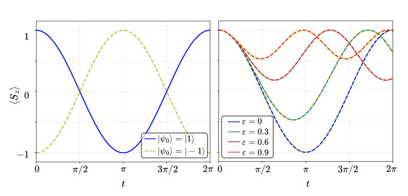
<figcaption class="paper-figure-caption"><b>Fig 1.</b> FIG. 1. Expectation value ⟨Sz⟩as a function of time for the Hamiltonian in Eq. (5) with D = −2 and γ = 0.5. The left panel shows the symmetric case (ε = 0), characterized by complete tunneling between the states |+1⟩and |−1⟩. The right panel corresponds to a finite asymmetry (ε ̸= 0), which suppresses complete population transfer while preserving the mirror symmetry of the dynamics. Solid and dashed curves correspond to the initial states |+1⟩and |−1⟩, respectively, with the latter plotted as −⟨Sz⟩.</figcaption>
</figure>
<figure class="paper-figure-card">
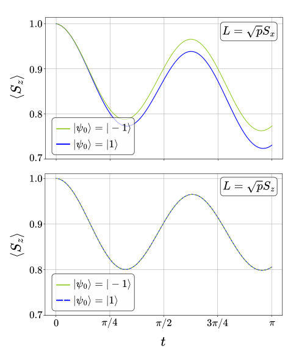
<figcaption class="paper-figure-caption"><b>Fig 2.</b> FIG. 2. Expectation value ⟨Sz⟩as a function of time under continuous weak measurement with D = −2, γ = 0.5, ε = 1, and p = 0.05. For initial state |−1⟩, the observable plotted as −⟨Sz⟩. Upper panel: jump operator L = √pxSx. Lower panel: jump operator L = √pzSz.</figcaption>
</figure>
<figure class="paper-figure-card">
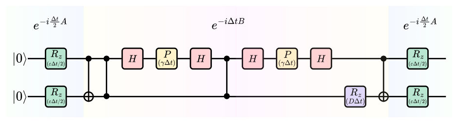
<figcaption class="paper-figure-caption"><b>Fig 3.</b> FIG. 3. Quantum circuit for one Trotter step used to simulate the dynamics generated by the Hamiltonian in Eq. (5). The full- time evolution is obtained by repeating this circuit with a time step ∆t. The Hamiltonian is decomposed into the asymmetric part, A = εSz, and the symmetric part, B = DS2 z + γ(S2 x −S2 y). The gates H, P, and Rz represent the Hadamard, phase, and Z-rotation gates, respectively. The circuit also employs controlled-NOT (CNOT) and controlled-Z (CZ) gates to implement two-qubit interactions.</figcaption>
</figure>
<figure class="paper-figure-card">
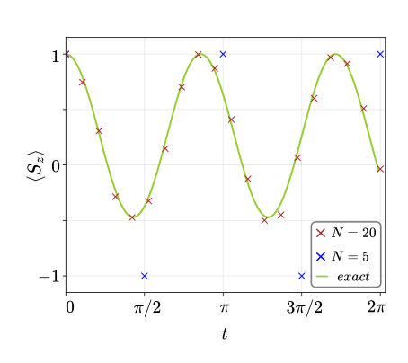
<figcaption class="paper-figure-caption"><b>Fig 4.</b> FIG. 4. Comparison of the Trotterized and exact time evo- lutions for N = 5 and N = 20 Trotter steps. Increasing the number of Trotter steps (equivalently, decreasing the time step) improves the accuracy of the Trotter approximation and brings the simulated dynamics closer to the exact evolution.</figcaption>
</figure>
<figure class="paper-figure-card">
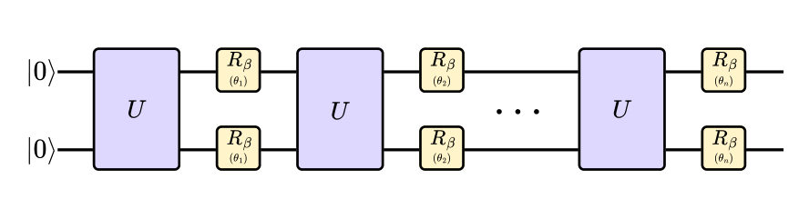
<figcaption class="paper-figure-caption"><b>Fig 5.</b> FIG. 5. Full quantum circuit with dissipation. Each block U represents one Trotter step as shown in Fig. 4. Dissipation is implemented by applying Rβ(θi) (β = x, z) rotations to both qubits with the same angle θi between successive Trotter steps. All angles θi are sampled uniformly in range  − p</figcaption>
</figure>
</div>

<p><strong>Summary.</strong> The paper demonstrates that weak continuous measurements are not just sources of decoherence but can act selectively to either preserve or break dynamical symmetries in open quantum systems. Using a spin-1 tunneling model, the authors show that measuring $S_z$ maintains symmetry while measuring $S_x$ breaks it, establishing measurement as a powerful tool for controlling dynamics.</p>
<p><strong>Why it may be interesting.</strong> This work provides a concrete mechanism showing how measurement itself can be engineered as a control knob for fundamental symmetries in open quantum systems, which is highly relevant for controlling qubits or simulating physical processes.</p>
<details>
<summary>Detailed structure</summary>
<p><strong>Main problem.</strong> The study investigates whether weak continuous measurements can selectively control or break dynamical symmetries in open quantum systems, moving beyond simple decoherence effects.</p>
<p><strong>Main result.</strong> The choice of measured observable dictates the symmetry outcome: monitoring $S_z$ preserves the mirror symmetry even with a bias, while measuring $S_x$ or $S_y$ breaks it.</p>
<p><strong>Method.</strong> The analysis uses the Lindblad master equation framework and is supported by numerical simulations comparing stochastic quantum trajectories to exact evolution.</p>
<p><strong>Model / system.</strong> The model is a spin-1 system undergoing tunneling between $|+1
angle$ and $|-1
angle$ states, governed by a Hamiltonian that includes a longitudinal bias ($\epsilon$). The dynamics are treated as an open system via the Lindblad equation.</p>
<p><strong>Key observables.</strong> Expectation value $\langle S_z 
angle$ over time; comparison of evolution starting from mirrored initial states ($|+1
angle$ vs $|-1
angle$).</p>
<p><strong>Important parameters / regimes.</strong> The longitudinal bias ($\epsilon$), and the strength/type of continuous measurement (e.g., $L \propto S_x$, $L \propto S_z$).</p>
<p><strong>Assumptions / limitations.</strong> The analysis relies on comparing the full Liouville space evolution under different jump operators derived from weak measurements.</p>
<p><strong>Figures summary.</strong> Figures compare $\langle S_z 
angle$ for closed vs. open dynamics, specifically contrasting $S_x$ and $S_z$ measurement effects under a finite bias ($\epsilon=1$).</p>
<p><strong>Paper structure.</strong> The paper first establishes the theoretical framework using the Lindblad equation for continuous measurements. It then applies this to a spin-1 tunneling model, demonstrating that the symmetry preservation depends critically on whether the jump operator couples the tunneling subspace to the intermediate $|0
angle$ state.</p>
</details>
<details>
<summary>Abstract</summary>
<p>Continuous measurement is commonly associated with decoherence and the loss of symmetry. Here, we show that weak continuous measurements can instead act selectively: depending on the measured observable, they may either preserve or remove a dynamical relation between initially mirrored states. Using tunneling between the $|+1\rangle$ and $|-1\rangle$ states of a spin-1 system, we demonstrate that measurements of $S_x$ and $S_y$ break the symmetry of the tunneling dynamics in the presence of a longitudinal bias, whereas measurement of $S_z$ leaves it intact. We formulate this behavior within the Lindblad framework, support it with numerical simulations, and reproduce the dissipative dynamics in a two-qubit quantum circuit using Trotterized evolution and stochastic collective rotations. Our results establish continuous measurement as a selective tool for controlling dynamical symmetry in open quantum systems.</p>
</details>
<p><sub><a href="#top">↑ back to top</a></sub></p>

<p><a id="paper-2607.19542"></a></p>
<h3 id="synthesizing-superoscillations-with-just-two-frequencies">⭐ <a href="http://arxiv.org/abs/2607.19542v1">Synthesizing superoscillations with just two frequencies</a></h3>
<p><strong>Highlighted author(s):</strong> Denys I. Bondar<br>
<strong>Authors:</strong> Denys I. Bondar, Diyar Talbayev<br>
<strong>Type:</strong> both · <strong>Category:</strong> other · <strong>PDF:</strong> <a href="https://arxiv.org/pdf/2607.19542v1">https://arxiv.org/pdf/2607.19542v1</a><br>
<strong>Analysis basis:</strong> full PDF text, analyzed in chunks
<strong>Topic relevance:</strong> <code>interference shaping light</code> <strong>3/5</strong> · <code>quantum optics experiment</code> <strong>3/5</strong> · <code>non-equilibrium dynamics</code> <strong>1/5</strong></p>
<div class="figure-strip-hint">↔ Scroll figures horizontally</div>
<div class="paper-figures-scroll">
<figure class="paper-figure-card">
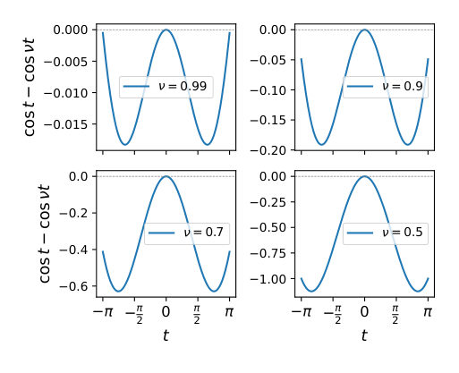
<figcaption class="paper-figure-caption"><b>Fig 1.</b> FIG. 1. An illustration of bichromatic superoscillations us- ing (4) for several values of ν. The closer ν approaches 1, the closer the function comes to exhibiting two oscillations within the superoscillating region. When ν = 1, there is complete destructive interference.</figcaption>
</figure>
<figure class="paper-figure-card">
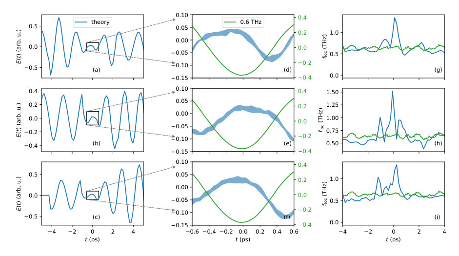
<figcaption class="paper-figure-caption"><b>Fig 2.</b> FIG. 2. Three example bichromatic superoscillations obtained via the minimization of Eq. (2) (using 0.5 and 0.6 THz harmonics) by reanalyzing experimental data from Fig. 3 of Ref. [14]. Left column (a, b, c) shows the predicted field over the full measurement window. The middle panels (d, e, f) highlight the window in which the superoscillation occurs, with comparison to the highest frequency component waveform. The shaded blue area shows the theoretical prediction with the 95% confidence limit. The right column (g, h, i) plots the local frequencies of both the total waveform and its highest frequency component. Outside the window of minimization these are roughly equivalent, but within...</figcaption>
</figure>
<figure class="paper-figure-card">
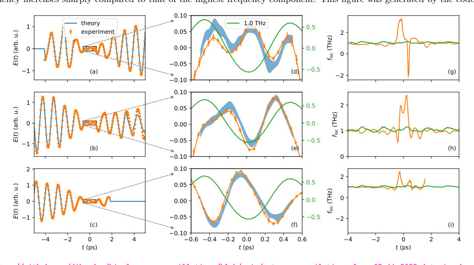
<figcaption class="paper-figure-caption"><b>Fig 3.</b> FIG. 3. Three example bichromatic superoscillations obtained via the minimization of Eq. (2) using 0.9 and 1 THz harmonics. Left column (a, b, c) shows both the predicted and observed field over the full measurement window. The middle panels (d, e, f) highlight the window in which the superoscillation occurs, with comparison to the highest frequency component waveform. The experimental data is in excellent agreement with the theoretical 95% confidence limit (shaded blue area). The right column (g, h, i) plots the local frequencies of both the total waveform and its highest frequency component. Outside the window of minimization these are roughly equivalent, but within this window the...</figcaption>
</figure>
</div>

<p><strong>Summary.</strong> This paper shows that generating superoscillations, which exhibit local frequencies exceeding the signal's highest Fourier component, can be achieved using only two constituent frequencies instead of the previously required four. By providing both analytical explanations and confirming results with new THz experiments, the authors significantly lower the experimental hurdle for developing superoscillation-based technologies.</p>
<p><strong>Why it may be interesting.</strong> This work directly addresses advanced topics in quantum optics and light-matter interaction by demonstrating a significant technological simplification (reducing required harmonics from four to two) while maintaining high performance metrics relevant for super-sensing applications.</p>
<details>
<summary>Detailed structure</summary>
<p><strong>Main problem.</strong> The primary goal is to synthesize superoscillations—band-limited signals that oscillate faster than their highest Fourier component—using the minimum number of constituent frequencies.</p>
<p><strong>Main result.</strong> The authors demonstrate that only two harmonics are sufficient to generate superoscillations with a twofold local frequency enhancement, matching performance previously requiring four harmonics.</p>
<p><strong>Method.</strong> The analysis involves minimizing the combined electric field intensity over a time window and calculating the local frequency via Hilbert transformation.</p>
<p><strong>Model / system.</strong> The system is based on temporal domain optical superoscillations generated using quasi-sinusoidal THz harmonics, experimentally realized in Periodically Poled Lithium Niobate (PPLN).</p>
<p><strong>Key observables.</strong> Local Frequency (floc), which quantifies the enhancement relative to the highest frequency component; signal amplitude.</p>
<p><strong>Important parameters / regimes.</strong> Optimal frequency separation of approximately 10% is identified as a balance point between high local frequency enhancement and sufficient signal amplitude.</p>
<p><strong>Assumptions / limitations.</strong> The analysis relies on modeling the combined field using sums of quasi-sinusoidal harmonics, and assumes that destructive interference can be controlled to enhance local oscillation rates.</p>
<p><strong>Figures summary.</strong> Figure 1 illustrates the theoretical basis for bichromatic superoscillations. Figures 2 and 3 provide experimental confirmation (reanalyzed and new data) showing a clear twofold increase in local frequency using only two harmonics (e.g., 0.5/0.6 THz and 0.9/1 THz).</p>
<p><strong>Paper structure.</strong> The paper establishes the problem of superoscillation synthesis, presents the theoretical framework for bichromatic generation, provides analytical explanations regarding optimal frequency separation, and concludes with experimental validation using both reanalyzed historical data and new measurements.</p>
</details>
<details>
<summary>Abstract</summary>
<p>Superoscillations, band-limited signals that locally oscillate faster than their highest Fourier component, have recently enabled superspectroscopy and super-sensing. Previous experiments [Phys. Rev. Lett. 131, 153803 (2023), https://doi.org/10.1103/PhysRevLett.131.153803 and APL Photonics 10, 086107 (2025), https://doi.org/10.1063/5.0271556] relied on combining four quasi-sinusoidal harmonics to generate temporal superoscillations. Here, we show that just two harmonics are sufficient to produce superoscillations of comparable quality, as quantified by the local frequency. By reanalyzing prior experimental data with two harmonics (0.5 and 0.6 THz) and performing new experiments with 0.9 and 1 THz harmonics, we demonstrate a twofold enhancement in local frequency relative to the highest frequency component -- matching the enhancement previously achieved with four harmonics. We provide a simple analytical explanation for the bichromatic superoscillations based on near-complete destructive interference, and identify an optimal frequency separation of approximately 10% that balances the superoscillatory frequency enhancement against signal amplitude. This simplification substantially lowers the experimental barrier to implementing superoscillation-based technology.</p>
</details>
<p><sub><a href="#top">↑ back to top</a></sub></p>

<p><a id="paper-2607.20333"></a></p>
<h3 id="collective-electronic-entanglement-via-infrared-cavity-induced-vibronic-transduction"><a href="http://arxiv.org/abs/2607.20333v1">Collective Electronic Entanglement via Infrared Cavity-Induced Vibronic Transduction</a></h3>
<p><strong>Authors:</strong> Vivek Yadav, Bar Cohn, Shmuel Sufrin, Uri Peskin, Lev Chuntonov<br>
<strong>Type:</strong> both · <strong>Category:</strong> other · <strong>PDF:</strong> <a href="https://arxiv.org/pdf/2607.20333v1">https://arxiv.org/pdf/2607.20333v1</a><br>
<strong>Analysis basis:</strong> full PDF text, analyzed in chunks
<strong>Topic relevance:</strong> 🔥 <code>Tavis-Cummings &amp; cavity-many-emitter</code> <strong>5/5</strong> · 🔥 <code>analog quantum simulation</code> <strong>4/5</strong> · 🔥 <code>correlated cavity matter</code> <strong>4/5</strong> · <code>correlated / nonlocal dissipation</code> <strong>3/5</strong> · <code>entanglement &amp; information structure</code> <strong>3/5</strong> · <code>methods for driven-dissipative</code> <strong>3/5</strong> · <code>driven-dissipative phase transition</code> <strong>2/5</strong> · <code>quantum optics experiment</code> <strong>2/5</strong> · <code>Keldysh / 2PI / non-Gaussian methods</code> <strong>1/5</strong> · <code>QC/QI experiment</code> <strong>1/5</strong> · <code>non-equilibrium dynamics</code> <strong>1/5</strong> · <code>non-equilibrium universality</code> <strong>1/5</strong></p>
<div class="figure-strip-hint">↔ Scroll figures horizontally</div>
<div class="paper-figures-scroll">
<figure class="paper-figure-card">
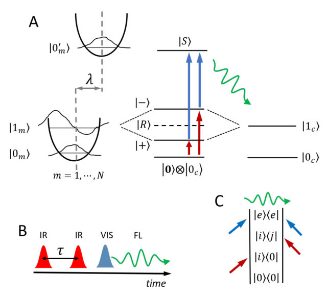
<figcaption class="paper-figure-caption"><b>Fig 1.</b> Fig. 1. FE-IR spectroscopy of VSC system. (A) Excitation states diagram. Left: ground and excited molecular electronic states displaced by the vibronic constant 𝜆 along the normal mode coordinate. The molecules in the ensemble enumerated by index 𝑚 contribute to collective bright state |𝐵⟩. Right: photonic states of infrared cavity. Middle: vibro-polariton states of the hybrid system. Red arrows – infrared laser pulses, blue arrows – visible laser pulses, green arrow – fluorescence emission. (B) Sequence of excitation laser pulses, 𝜏 – coherence time interval. (C) Double-sided Feynman diagram describing the Liouville space fourth-order response functions. Indices 𝑖, 𝑗 - vibrational...</figcaption>
</figure>
<figure class="paper-figure-card">
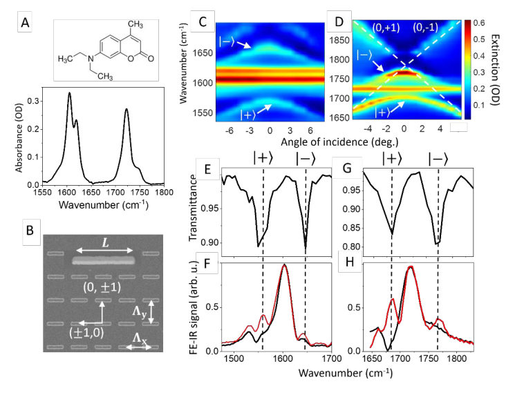
<figcaption class="paper-figure-caption"><b>Fig 2.</b> Fig. 2. VSC system. (A) Linear FT-IR spectrum of C-1 solution in toluene. Molecular structure is shown on top. (B) Scanning electron micro-image of the infrared antenna array. Antenna dimensions are: length (𝐿) 1.1 μm, width 200 nm, and height 80 nm. Lattice diffraction orders associated with SLRs are indicated. Vibro-polaritons dispersion maps obtained with FT-IR. (C) C=C vibration strongly coupled to SLR. Spectra collected at different angles of incidence with TE-polarized light. Array lattice constants are Λ𝑥=1.6 μm and Λ𝑦=4.2 μm. Polariton branches are marked with white arrows. (D) Same as panel C, but for C=O vibration. Array lattice constants are Λ𝑥=1.6 μm and Λ𝑦=3.8 μm. Non-linear...</figcaption>
</figure>
<figure class="paper-figure-card">
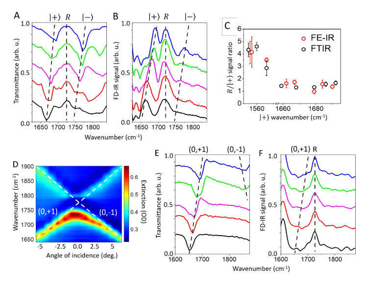
<figcaption class="paper-figure-caption"><b>Fig 3.</b> Fig. 3. FE-IR spectroscopy of C=O vibration on antenna arrays. FE-IR measurements with different incident angles of IR pulses. Blue - 𝜃~1°, green - 𝜃~2°, magenta - 𝜃~4°, red - 𝜃~5°, black - 𝜃~6°. Polariton and reservoir peaks are traced by dashed lines. VSC regime, C-1 concentration 2.5 M. (A) Transmission spectra measured with bare-molecule spectrum as background. (B) FE-IR spectra. (C) Reservoir to |+⟩ signal ratio obtained with FT-IR (black circles) and FE-IR (red circles). The data are plotted for different |+⟩ transition frequencies. Uncoupled C=O vibration, C-1 concentration 40 mM. (D) SLR dispersion map measured with FT-IR. (E) Transmission spectra, measured with bare-molecule...</figcaption>
</figure>
</div>

<p><strong>Summary.</strong> The paper reports on generating macroscopically entangled electronic states in molecular ensembles by utilizing infrared cavity fields coupled through molecular vibrations. By employing nonlinear FE-IR spectroscopy, the authors overcome the theoretical $O(1/N)$ dilution limit, demonstrating a robust, scale-invariant coupling mechanism for room-temperature quantum applications.</p>
<p><strong>Why it may be interesting.</strong> This work is highly relevant as it addresses scalable quantum light-matter interaction in solid-state molecular systems, providing a mechanism (vibronic bridge) to maintain coherence against ensemble size limitations crucial for quantum technologies.</p>
<details>
<summary>Detailed structure</summary>
<p><strong>Main problem.</strong> The primary challenge is overcoming the $O(1/N)$ ensemble dilution bottleneck when observing localized molecular responses coupled to delocalized optical cavity fields in polaritonic architectures.</p>
<p><strong>Main result.</strong> The authors demonstrate a scale-invariant, collective electronic entanglement scaling as $O(1)$, achieved through vibronic quantum transduction that bypasses the expected density decay penalty.</p>
<p><strong>Method.</strong> They employ fourth-order nonlinear fluorescence-encoded infrared (FE-IR) action spectroscopy to probe these non-local vibrational-to-electronic coupling pathways.</p>
<p><strong>Model / system.</strong> The system involves molecular ensembles coupled via strong interaction to an optical cavity mode, modeled using extensions of the Tavis-Cummings-Holstein Hamiltonian. The process relies on a 'synthetic vibronic bridge' mechanism.</p>
<p><strong>Key observables.</strong> The key diagnostic is measuring the electronic response scaling law, aiming for $O(1)$ invariance, alongside analyzing the ratio $rac{I_R^{FE-IR}}{I_\pm^{FE-IR}}$ to confirm collective behavior.</p>
<p><strong>Important parameters / regimes.</strong> Key regimes include the dispersive coupling regime and the ability to synchronize responses over picosecond vibrational timescales versus femtosecond electronic coherence times.</p>
<p><strong>Assumptions / limitations.</strong> The analysis assumes operation in a dispersive coupling regime, where Rabi splitting remains constant with laser power, and that the visible pulse drives coherence between specific molecular states.</p>
<p><strong>Figures summary.</strong> Figures detail FE-IR spectra for various vibrational modes (C=C, C=O) on antenna arrays, dispersion maps of vibro-polaritons, and schematic diagrams illustrating the excitation pathways and coupling mechanisms.</p>
<p><strong>Paper structure.</strong> The paper establishes the theoretical bottleneck ($O(1/N)$ scaling), introduces the FE-IR methodology to probe collective behavior, develops a Hamiltonian framework incorporating VSC, and presents experimental evidence showing $O(1)$ scaling via vibronic transduction.</p>
</details>
<details>
<summary>Abstract</summary>
<p>Polaritonic architectures seek to engineer molecular properties by hybridizing localized degrees of freedom with delocalized optical cavity fields. However, scaling laws impose a severe bottleneck on N-molecule collective strong coupling: because each molecule contributes only a fractional share to the collective state, localized responses undergo O(1/N) ensemble dilution. We demonstrate a violation of this scaling using fluorescence-encoded infrared spectroscopy of molecular ensembles under vibrational strong coupling, where macroscopically synchronized electronic responses scale as O(1). This scale-invariance reveals a regime of vibronic quantum transduction, where non-local vibrational entanglement is translated into collective electronic entanglement. By demonstrating the generation of macroscopically entangled electronic states from vibro-polaritons without an O(1/N) penalty, these results provide a scalable framework for room-temperature quantum technologies and coherent steering of non-adiabatic chemical pathways.</p>
</details>
<p><sub><a href="#top">↑ back to top</a></sub></p>

<p><a id="paper-2607.19533"></a></p>
<h3 id="high-purity-entanglement-mediated-by-magnons-despite-weak-coupling"><a href="http://arxiv.org/abs/2607.19533v1">High-purity entanglement mediated by magnons despite weak coupling</a></h3>
<p><strong>Authors:</strong> Sanchar Sharma<br>
<strong>Type:</strong> theory · <strong>Category:</strong> quantum information and computing · <strong>PDF:</strong> <a href="https://arxiv.org/pdf/2607.19533v1">https://arxiv.org/pdf/2607.19533v1</a><br>
<strong>Analysis basis:</strong> full PDF text, analyzed in chunks
<strong>Topic relevance:</strong> 🔥 <code>methods for driven-dissipative</code> <strong>4/5</strong> · 🔥 <code>quantum measurements</code> <strong>4/5</strong> · 🔥 <code>spintronics-quantum-optics interface</code> <strong>4/5</strong> · <code>correlated / nonlocal dissipation</code> <strong>3/5</strong> · <code>entanglement &amp; information structure</code> <strong>3/5</strong> · <code>measurement-induced transitions</code> <strong>3/5</strong> · <code>QC/QI experiment</code> <strong>2/5</strong> · <code>exotic spin models in light-matter</code> <strong>2/5</strong> · <code>non-equilibrium dynamics</code> <strong>2/5</strong> · <code>Keldysh / 2PI / non-Gaussian methods</code> <strong>1/5</strong> · <code>analog quantum simulation</code> <strong>1/5</strong> · <code>driven-dissipative phase transition</code> <strong>1/5</strong></p>
<div class="figure-strip-hint">↔ Scroll figures horizontally</div>
<div class="paper-figures-scroll">
<figure class="paper-figure-card">
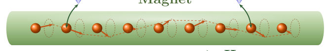
<figcaption class="paper-figure-caption"><b>Fig 1.</b> FIG. 1. Setup for heralding entanglement between two NV centers, NV1 and NV2. They sit near</figcaption>
</figure>
<figure class="paper-figure-card">
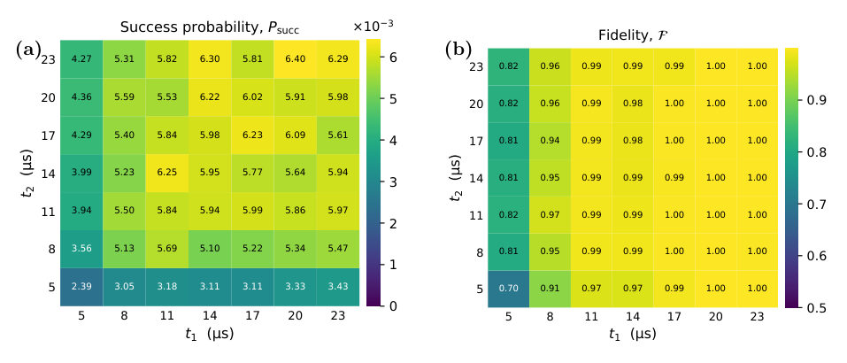
<figcaption class="paper-figure-caption"><b>Fig 2.</b> FIG. 2. (a) Success probability and (b) fidelity as a function of the two waiting times t1 and t2,</figcaption>
</figure>
<figure class="paper-figure-card">

<figcaption class="paper-figure-caption"><b>Fig 3.</b> FIG. 3. (a) Success probability and (b) fidelity as a function of the two waiting times t1 and t2,</figcaption>
</figure>
<figure class="paper-figure-card">
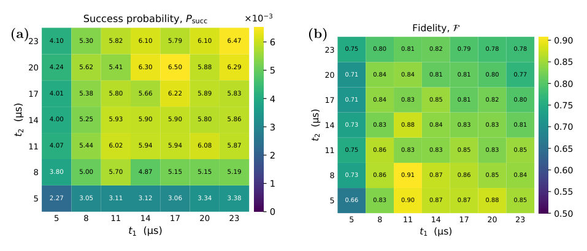
<figcaption class="paper-figure-caption"><b>Fig 4.</b> Fig. 2 shows the success probability and fidelity as functions of t1 and t2 at the low de-</figcaption>
</figure>
</div>

<p><strong>Summary.</strong> The paper presents a novel probabilistic protocol to generate high-fidelity entanglement between distant NV centers using magnons as a quantum bus. It successfully breaks the conventional trade-off between coupling strength and decoherence by engineering the interaction such that only transitions outside the computational basis are coupled to the magnon bath. The results show near-unity fidelity is achievable even with weak coupling, making it highly relevant for solid-state quantum networking.</p>
<p><strong>Why it may be interesting.</strong> This work directly addresses scalable quantum networking by demonstrating how solid-state spin systems can mediate entanglement robustly against coupling strength limitations, a key challenge in quantum information science.</p>
<details>
<summary>Detailed structure</summary>
<p><strong>Main problem.</strong> The research aims to overcome a fundamental trade-off in quantum entanglement generation where increasing spin-magnon coupling enhances fidelity but simultaneously increases the decoherence rate.</p>
<p><strong>Main result.</strong> A probabilistic protocol was proposed that achieves high entanglement fidelity, even with arbitrarily weak coupling, by utilizing magnon measurement to protect the computational subspace from decay.</p>
<p><strong>Method.</strong> The analysis uses a Monte-Carlo wavefunction approach (stochastic unravelling) applied to the system's master equation dynamics.</p>
<p><strong>Model / system.</strong> The physical platform involves two Nitrogen-Vacancy (NV) centers coupled via magnons propagating in a thin magnetic wire. The protocol relies on coupling magnons only to transitions outside the computational basis to preserve coherence.</p>
<p><strong>Key observables.</strong> Entanglement fidelity ($F$) and success probability ($P_{succ}$), aiming for the maximally entangled Bell state $|\psi_{	ext{des}}
angle \propto |0ar{1}
angle + |ar{1}0
angle$.</p>
<p><strong>Important parameters / regimes.</strong> The analysis considers regimes with weak coupling (coupling strength $g$ being small relative to magnon linewidth $\kappa$) and finite NV dephasing rates ($\kappa_{mod}^{NV}$).</p>
<p><strong>Assumptions / limitations.</strong> Initially, the protocol assumes global microwave control; later analyses incorporate finite NV dephasing effects into the fidelity calculation.</p>
<p><strong>Figures summary.</strong> Not specified (Notes detail mathematical derivations and simulation results for fidelity vs. coupling/time).</p>
<p><strong>Paper structure.</strong> The paper first identifies the entanglement trade-off, then proposes a probabilistic protocol based on magnon measurement to circumvent this limit. It details the Hamiltonian and dynamics using MC wavefunction simulations, culminating in quantitative predictions of achievable fidelity under realistic decoherence conditions.</p>
</details>
<details>
<summary>Abstract</summary>
<p>Entangling distant spins via a shared magnonic bus typically faces a tradeoff: stronger spin-magnon coupling increases the entanglement fidelity, but also the spin decay rate. We propose a protocol that breaks this tradeoff. The magnons couple only to a transition outside the computational basis, in which the Bell state is created. Our protocol is probabilistic, and weak coupling reduces the success probability but not the fidelity. We analyze a setup where the spins are two nitrogen-vacancy (NV) centers near a magnetic wire. In the absence of NV dephasing, the protocol reaches unit fidelity with a maximally entangled state, for arbitrarily weak coupling. In our simulations via the Monte-Carlo wavefunction approach, the NV-magnon coupling is taken to be one-third of the magnon linewidth. Considering finite NV dephasing, we predict a fidelity of &gt;0.99 for a state-of-the-art rate, and an optimal fidelity of 0.91 for a moderate rate, both at 0.6% success probability.</p>
</details>
<p><sub><a href="#top">↑ back to top</a></sub></p>

<p><a id="paper-2607.20231"></a></p>
<h3 id="lattice-quantum-electrodynamics-of-a-molecular-emitter-in-a-topological-gap"><a href="http://arxiv.org/abs/2607.20231v1">Lattice quantum electrodynamics of a molecular emitter in a topological gap</a></h3>
<p><strong>Authors:</strong> Clarisse Fournier, Johannes Düreth, Elena Fanella, Hugo Levy-Falk, Maja Colautti, Anna Beauvironnet, Gauthier Dekyndt, Clément Hainaut, Tomáš Neuman, Simon Betzold, Sven Höfling, Sebastian Klembt, Alejandro González-Tudela, Costanza Toninelli, Alberto Amo<br>
<strong>Type:</strong> experiment · <strong>Category:</strong> other · <strong>PDF:</strong> <a href="https://arxiv.org/pdf/2607.20231v1">https://arxiv.org/pdf/2607.20231v1</a><br>
<strong>Analysis basis:</strong> full PDF text, analyzed in chunks
<strong>Topic relevance:</strong> 🔥 <code>analog quantum simulation</code> <strong>4/5</strong> · 🔥 <code>correlated cavity matter</code> <strong>4/5</strong> · <code>driven-dissipative phase transition</code> <strong>3/5</strong> · <code>interference shaping light</code> <strong>3/5</strong> · <code>quantum optics experiment</code> <strong>3/5</strong> · <code>Tavis-Cummings &amp; cavity-many-emitter</code> <strong>2/5</strong> · <code>methods for driven-dissipative</code> <strong>2/5</strong> · <code>non-equilibrium dynamics</code> <strong>2/5</strong> · <code>non-equilibrium universality</code> <strong>2/5</strong> · <code>Frenkel-Kontorova</code> <strong>1/5</strong> · <code>Keldysh / 2PI / non-Gaussian methods</code> <strong>1/5</strong> · <code>correlated / nonlocal dissipation</code> <strong>1/5</strong> · <code>entanglement &amp; information structure</code> <strong>1/5</strong> · <code>exotic spin models in light-matter</code> <strong>1/5</strong></p>
<div class="figure-strip-hint">↔ Scroll figures horizontally</div>
<div class="paper-figures-scroll">
<figure class="paper-figure-card">
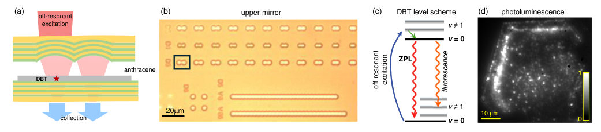
<figcaption class="paper-figure-caption"><b>Fig 1.</b> FIG. 1. The open cavity - DBT system. (a) Sketch of the open cavity with two coupled hemispheric resonators. (b) Optical microscope image of a region of the upper mirror displaying individual hemispheres, dimers and lattices of coupled hemispheres. (c) Simplified energy level scheme of a DBT molecule. v = 0 indicates the fundamental vibrational state of the ground and first excited electronic state. ZPL is the zero-phonon line emission. (d) Photoluminescence image of the anthracene crystal with DBT molecules used in the experiments under wide field laser illumination at 764.150 nm, corresponding to the excitation from the full ground state to the first vibrational band v = 1 of the first...</figcaption>
</figure>
<figure class="paper-figure-card">
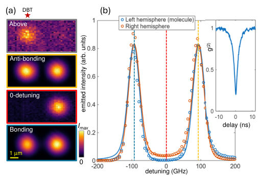
<figcaption class="paper-figure-caption"><b>Fig 2.</b> FIG. 2. DBT in a dimer of resonators. (a) Spatially re- solved photoluminescence of a DBT molecule in a photonic dimer under off-resonant excitation at 765.267 nm at differ- ent emitter-cavity detunings ∆: the color of the frame corre- sponds to the detunings marked in dashed lines in (b). For the top panel ∆= 273 GHz. The molecule is located close to the center of the left hemisphere. (b) Emitted intensity from the left (red dots) and right (blue dots) hemispheres as a function of the emitter-cavity detuning. Solid lines represent the expected transmission including the effect of mechanical vibrations of the cavity length. The inset displays the mea- sured g(2) when the molecule transition...</figcaption>
</figure>
<figure class="paper-figure-card">
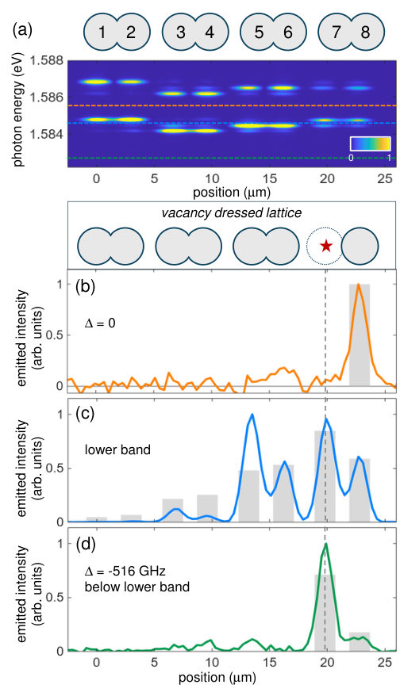
<figcaption class="paper-figure-caption"><b>Fig 3.</b> FIG. 3. Vacancy-like bound state in an SSH lattice. (a) Transmission spectrum across the center of the lattice sketched on the top using a broadband lamp. (b)-(d) Solid lines display the measured photoluminescence at the transi- tion energy of a molecule located at site m = 7 (indicated by a red star and vertical dashes lines) for different emitter- hemisphere detunings. The grey bars are the steady-state solutions of Eq. (1) at the corresponding detunings.</figcaption>
</figure>
<figure class="paper-figure-card">
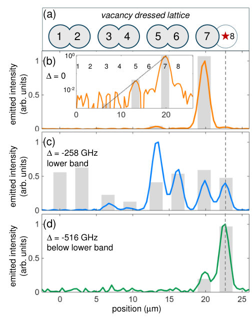
<figcaption class="paper-figure-caption"><b>Fig 4.</b> FIG. 4. Directional vacancy-like dressed state with molecule in hemisphere m = 8. (a) Scheme of the vacancy dressed pho- tonic lattice at the energy of the emitter-photon bound state at ∆= 0. (b)-(d) Solid lines display the measured photolu- minescence at the transition energy of a molecule located at site m = 8 (indicated by a red star and vertical dashes lines) for different emitter-hemisphere detunings. The grey bars are the steady-state solutions of Eq. (1) at the corresponding de- tunings. The inset of (b) displays the data in semi-log scale. The dotted line shows the expected exponential decay of a topological edge state.</figcaption>
</figure>
<figure class="paper-figure-card">
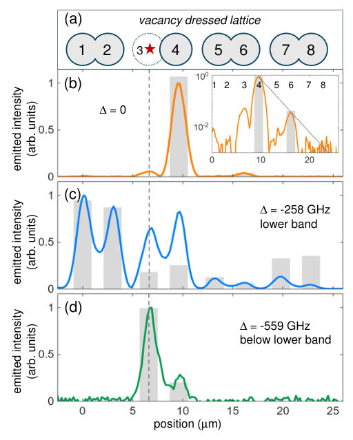
<figcaption class="paper-figure-caption"><b>Fig 5.</b> FIG. 5. Directional vacancy-like dressed state with molecule in hemisphere m = 3. (a) Scheme of the vacancy dressed pho- tonic lattice at the energy of the emitter-photon bound state at ∆= 0. (b)-(d) Solid lines display the measured photolu- minescence at the transition energy of a molecule located at site m = 3 (indicated by a red star and vertical dashes lines) for different emitter-hemisphere detunings. The grey bars are the steady-state solutions of Eq. (1) at the corresponding de- tunings. The inset of (b) displays the data in semi-log scale. The dotted line shows the expected exponential decay of a topological edge state.</figcaption>
</figure>
</div>

<p><strong>Summary.</strong> The paper introduces an optical lattice Quantum Electrodynamics platform using embedded organic molecules coupled to structured microcavities. By tuning the molecular emission into the photonic band gap of a Su-Schrieffer-Heeger (SSH) lattice, the researchers successfully observed topological edge mode characteristics in emitter-photon bound states. This establishes a versatile architecture for engineering complex quantum optical systems with controlled interactions.</p>
<p><strong>Why it may be interesting.</strong> This work is highly relevant as it combines molecular physics (DBT emitters) with advanced concepts from condensed matter theory, specifically topological photonics and engineered band structures, to create a controllable quantum light-matter interface.</p>
<details>
<summary>Detailed structure</summary>
<p><strong>Main problem.</strong> The research aims to control both the spontaneous emission of individual quantum emitters and the photon-mediated interactions between them by engineering the photonic environment.</p>
<p><strong>Main result.</strong> The authors demonstrated emitter-photon bound states exhibiting directional localization on a single sublattice when the molecule's transition is tuned into the topological band gap of an SSH cavity lattice.</p>
<p><strong>Method.</strong> The study uses a hybrid platform combining molecular emitters (DBT) embedded in crystals with engineered optical microcavity lattices to realize controlled light-matter coupling.</p>
<p><strong>Model / system.</strong> The system utilizes open optical cavities structured into lattices, specifically demonstrating behavior analogous to Su-Schrieffer-Heeger (SSH) chains. The physics is modeled using cavity QED principles applied to coupled resonators.</p>
<p><strong>Key observables.</strong> Emitter-photon bound states, directional photon emission on a single sublattice, and the characterization of photonic band gaps.</p>
<p><strong>Important parameters / regimes.</strong> The system operates at specific wavelengths (e.g., 782 nm) and involves tuning the molecular transition relative to the engineered photonic band structure ($\Delta$).</p>
<p><strong>Assumptions / limitations.</strong> The architecture assumes that coupling to engineered band structures allows for precise control over interactions, extending beyond single-molecule demonstrations.</p>
<p><strong>Figures summary.</strong> Figures illustrate the physical setup (open cavity sketch, optical images) and show photoluminescence spectra demonstrating spectral dependence on detuning ($\Delta$) within the lattice structure.</p>
<p><strong>Paper structure.</strong> The paper progresses from establishing the general concept of Lattice QED to detailing the specific hybrid architecture using DBT molecules. It then presents proof-of-principle measurements by observing topological edge mode characteristics in bound states formed within a cavity SSH lattice.</p>
</details>
<details>
<summary>Abstract</summary>
<p>Engineering the photonic environment using lattices of coupled resonators, which we refer to as lattice quantum electrodynamics (QED), provides a route to control both the spontaneous emission of individual quantum emitters and the photon-mediated interactions between them. Here we introduce an optical lattice QED platform based on individual dibenzoterrylene (DBT) molecules embedded in anthracene crystals and coupled to lattices of open optical microcavities. This hybrid architecture benefits from narrow-linewidth molecular emitters, site-resolved optical access, engineered coupled-resonator bands, and compatibility with established molecular frequency-tuning techniques. As a proof-of-principle demonstration, we observe emitter-photon bound states formed when the optical transition of a single molecule is tuned to the band gap of a Su-Schrieffer-Heeger (SSH) cavity lattice. These in-gap states display directional localization and photon emission on a single sublattice, inherited from the vacancy-induced topological edge modes of the underlying SSH lattice. Our results establish open-cavity lattices coupled to DBT molecules as a versatile architecture for engineering many-emitter quantum optical systems with controllable photon-mediated interactions.</p>
</details>
<p><sub><a href="#top">↑ back to top</a></sub></p>

<p><a id="paper-2607.20236"></a></p>
<h3 id="entanglement-dynamics-through-electromagnetic-interactions-in-single-electron-traps"><a href="http://arxiv.org/abs/2607.20236v1">Entanglement dynamics through electromagnetic interactions in single-electron traps</a></h3>
<p><strong>Authors:</strong> Pablo Guillermo Carmona Rufo, Anupam Mazumdar, Carlos Sabín<br>
<strong>Type:</strong> theory · <strong>Category:</strong> other · <strong>PDF:</strong> <a href="https://arxiv.org/pdf/2607.20236v1">https://arxiv.org/pdf/2607.20236v1</a><br>
<strong>Analysis basis:</strong> full PDF text, analyzed in chunks
<strong>Topic relevance:</strong> 🔥 <code>entanglement &amp; information structure</code> <strong>4/5</strong> · <code>analog quantum simulation</code> <strong>3/5</strong> · <code>correlated / nonlocal dissipation</code> <strong>3/5</strong> · <code>methods for driven-dissipative</code> <strong>3/5</strong> · <code>non-equilibrium dynamics</code> <strong>3/5</strong> · <code>Keldysh / 2PI / non-Gaussian methods</code> <strong>2/5</strong> · <code>driven-dissipative phase transition</code> <strong>2/5</strong> · <code>quantum optics experiment</code> <strong>2/5</strong> · <code>QC/QI experiment</code> <strong>1/5</strong> · <code>correlated cavity matter</code> <strong>1/5</strong> · <code>non-equilibrium universality</code> <strong>1/5</strong></p>
<div class="figure-strip-hint">↔ Scroll figures horizontally</div>
<div class="paper-figures-scroll">
<figure class="paper-figure-card">
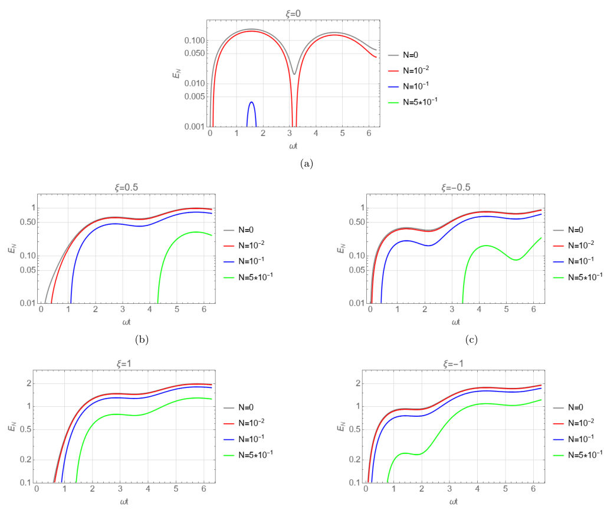
<figcaption class="paper-figure-caption"><b>Fig 1.</b> FIG. 1: Values of the logarithmic negativity of the single-mode squeezed thermal state plotted for α = ωt ∈[0, 2π] and for (a) ξ = 0, (b) ξ = 0.5, (c) ξ = −0.5, (d) ξ = 1 and (e) ξ = −1. The values used for the physical parameters of the system are ω = 10 GHz and d = 3 µm. In each plot, each curve is calculated for a different value of the thermal number, which depend on experimental constraints as well. A frequency of ω = 10 GHz and the temperature that has been able to be reached in recent experiments, which ranges around 50 to 100 mK [59, 60], result in a thermal number of N ∼0.1. Thus, the curves with values for N lower than this threshold represent what possible future experimental...</figcaption>
</figure>
<figure class="paper-figure-card">
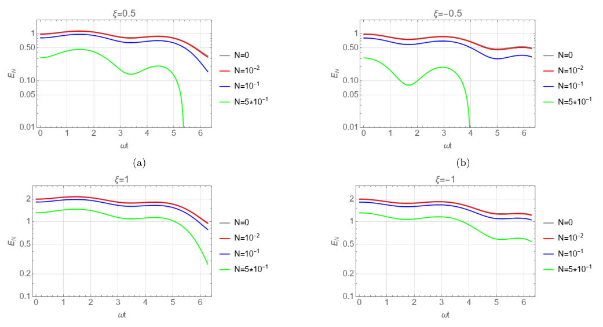
<figcaption class="paper-figure-caption"><b>Fig 2.</b> FIG. 2: Values of the logarithmic negativity of the two-mode squeezed thermal state plotted for (a) ξ = 0.5, (b) ξ = −0.5, (c) ξ = 1 and (d) ξ = −1. The discussion around the physical parameters is fully equivalent to the one for the single-mode case, detailed in the footnote of Figure 1.</figcaption>
</figure>
</div>

<p><strong>Summary.</strong> This paper theoretically analyzes the dynamics of quantum entanglement between two interacting electrons confined in harmonic traps. Using Gaussian state formalism, it calculates entanglement evolution via logarithmic negativity for different initial squeezing conditions. The results show that electromagnetic interactions can both generate and destroy entanglement depending on the initial state preparation.</p>
<p><strong>Why it may be interesting.</strong> This work directly addresses fundamental questions in open quantum systems and trapped-ion physics by quantifying how environmental coupling (thermal noise) and internal interactions affect fragile quantum correlations like entanglement.</p>
<details>
<summary>Detailed structure</summary>
<p><strong>Main problem.</strong> The study investigates how quantum entanglement evolves between two electrons trapped harmonically and interacting via electromagnetic forces.</p>
<p><strong>Main result.</strong> The interaction can either generate entanglement if starting from a single-mode squeezed state or cause the degradation of pre-existing entanglement if starting from a two-mode squeezed state.</p>
<p><strong>Method.</strong> The analysis employs the covariance matrix formalism to track the time evolution of Gaussian states, quantifying entanglement using the logarithmic negativity.</p>
<p><strong>Model / system.</strong> The system consists of two electrons in adjacent harmonic traps, governed by a Hamiltonian including Coulomb and Darwin interaction terms. The dynamics are analyzed for multi-mode Gaussian states at thermal equilibrium.</p>
<p><strong>Key observables.</strong> Logarithmic Negativity (EN), which quantifies the degree of entanglement.</p>
<p><strong>Important parameters / regimes.</strong> Squeezing coefficient ($\xi$), temperature ($T$) or thermal occupation number ($N$), and interaction coupling constants ($g_C, g_D$).</p>
<p><strong>Assumptions / limitations.</strong> The system is treated as a multi-mode Gaussian state at thermal equilibrium, and the interaction Hamiltonian is approximated by expanding terms assuming trap separation $d$ is much larger than electron fluctuations.</p>
<p><strong>Figures summary.</strong> Figures illustrate the time evolution of EN for both single-mode and two-mode squeezed initial states under varying squeezing levels and noise/temperature conditions.</p>
<p><strong>Paper structure.</strong> The paper progresses from defining the physical model and Hamiltonian, to detailing the mathematical methods (covariance matrix formalism), presenting analytical solutions for time evolution operators, and finally analyzing the results for different initial entanglement configurations.</p>
</details>
<details>
<summary>Abstract</summary>
<p>We study the dynamics of quantum entanglement between two harmonically trapped electrons interacting via the electromagnetic force. Starting from two-mode Gaussian states at thermal equilibrium, we make use of the covariance matrix formalism in order to compute the logarithmic negativity of the evolved state as a quantitative measure of entanglement. We analyze two initial configurations: thermal single-mode and two-mode squeezed states, and describe the time evolution of entanglement in the system for different values of squeezing and temperature, while identifying the parameter regimes accessible to current and near-future single-electron trap experiments.</p>
</details>
<p><sub><a href="#top">↑ back to top</a></sub></p>

<p><a id="paper-2607.20234"></a></p>
<h3 id="coupling-phase-interference-effects-in-a-multimode-cavity-magnonics-system"><a href="http://arxiv.org/abs/2607.20234v1">Coupling phase interference effects in a multimode cavity magnonics system</a></h3>
<p><strong>Authors:</strong> M. Avicena, G. Bourcin, V. Vlaminck, J. Bourhill, V. Castel<br>
<strong>Type:</strong> both · <strong>Category:</strong> other · <strong>PDF:</strong> <a href="https://arxiv.org/pdf/2607.20234v1">https://arxiv.org/pdf/2607.20234v1</a><br>
<strong>Analysis basis:</strong> full PDF text, analyzed in chunks
<strong>Topic relevance:</strong> 🔥 <code>spintronics-quantum-optics interface</code> <strong>4/5</strong> · <code>Tavis-Cummings &amp; cavity-many-emitter</code> <strong>3/5</strong> · <code>interference shaping light</code> <strong>3/5</strong> · <code>exotic spin models in light-matter</code> <strong>2/5</strong> · <code>quantum optics experiment</code> <strong>2/5</strong> · <code>analog quantum simulation</code> <strong>1/5</strong> · <code>correlated / nonlocal dissipation</code> <strong>1/5</strong> · <code>correlated cavity matter</code> <strong>1/5</strong> · <code>driven-dissipative phase transition</code> <strong>1/5</strong> · <code>methods for driven-dissipative</code> <strong>1/5</strong> · <code>non-equilibrium dynamics</code> <strong>1/5</strong></p>
<div class="figure-strip-hint">↔ Scroll figures horizontally</div>
<div class="paper-figures-scroll">
<figure class="paper-figure-card">
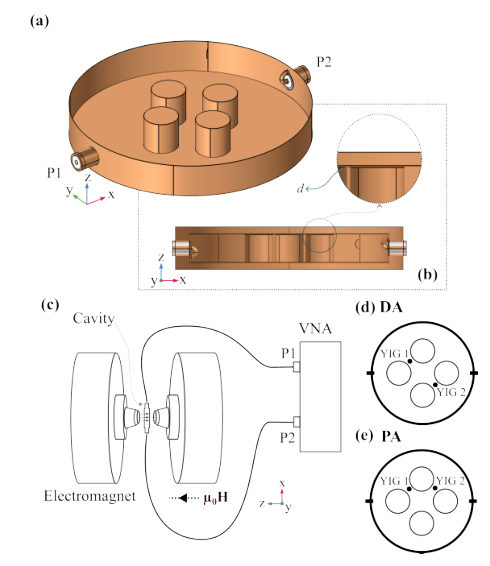
<figcaption class="paper-figure-caption"><b>Fig 1.</b> FIG. 1. (a) An overhead view of the quadruple-post re-entrant cavity with ports at opposite ends of the cavity. We indicate one end as P1 and P2 as the other. (b) A cross section of the cavity along the zx- plane. The resonant frequency is controlled by the geometry of the cavity, mainly by the lid-post gap distance, d shown in the zoomed in circle. (c) The experimental setup, where the cavity magnonic sys- tem is placed so that the posts’ orientation is parallel to the external magnetic field, µ0H; i.e. we set the z-axis to coincide with µ0H. The cavity modes are excited and probed using a vector network analyzer (VNA). (d) Overhead sketch of the diagonal arrangement, DA and (e) sketch of...</figcaption>
</figure>
<figure class="paper-figure-card">
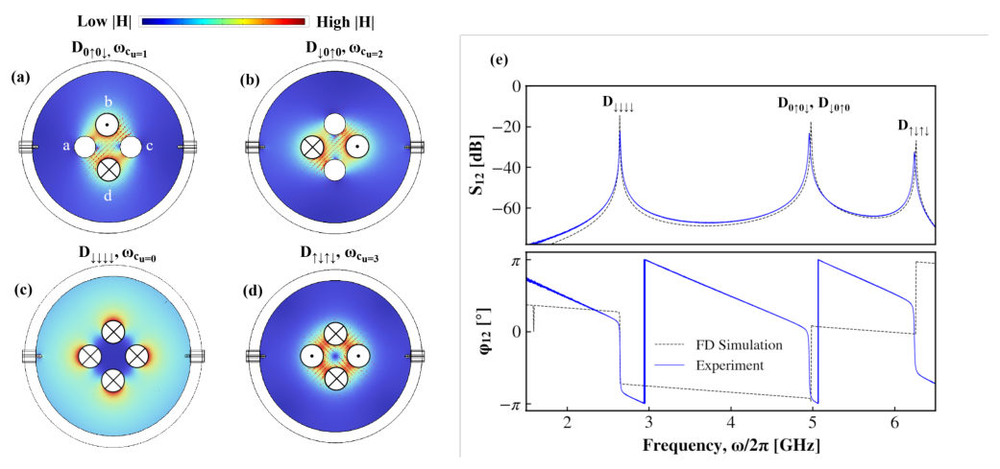
<figcaption class="paper-figure-caption"><b>Fig 2.</b> FIG. 2. Eigenfrequency (EF) simulation of the MW magnetic field distribution inside the modeled empty cavity (a) D0↑0↓, (b) D↓0↑0, (c) D↓↓↓↓ and (d) D↑↓↑↓, the red (blue) regions indicate high (low) MW field intensity. The ⊗and ⊙sign overlaid on the posts indicate out-of-post and into-post MW E-field direction, respectively. (e) Frequency sweep of the empty cavity with respect to the transmission parameter S12 in dB and its transmission phase, ϕ12 in rad. The blue solid line showing the transmission spectrum obtained from experiment, and the dashed black line is the same spectrum obtained from frequency domain (FD) simulation, applying perfect electrical conductor boundary condition at the...</figcaption>
</figure>
<figure class="paper-figure-card">
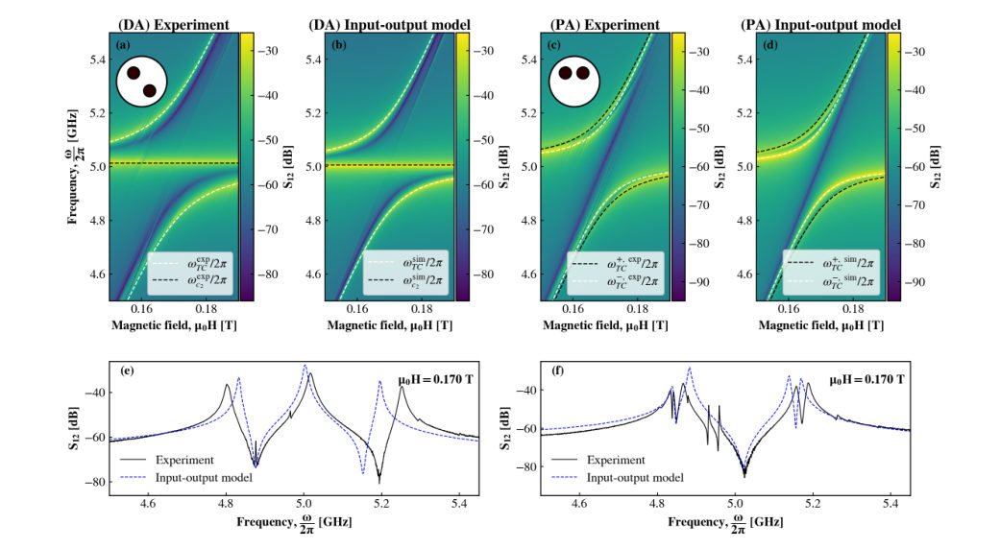
<figcaption class="paper-figure-caption"><b>Fig 3.</b> FIG. 3. (a-d) Scattering parameter S12 color map in dB scale as a function of frequency, ω/2π and external magnetic field, µ0H for the DA and PA. Panel (a) and (b) are the measured and calculated response for the DA configuration, respectively. The dashed lines in panel (a-d) are the eigenfrequencies of the polariton, ωTC, modelled using the two-level Tavis-Cummings coupling model (see Appendix B and48,49 cited therein). Panel (c) and (d) on the other hand, correspond to the PA. To obtain the numerically calculated response in (b) and (d), we feed parameter values obtained through coupled Landau-Lifshitz-Gilbert and Maxwell’s equation FE simulation (listed in Table I in the Appendix C) to...</figcaption>
</figure>
<figure class="paper-figure-card">
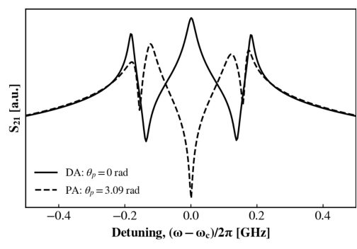
<figcaption class="paper-figure-caption"><b>Fig 4.</b> FIG. 4. Numerical calculation of Eq. (12) when the physical phase, θp = 0 rad corresponding to three peaks response and the uncou- pled mode (solid black line) and θp = 3.09 rad corresponding to four peaks of CMPs (dashed black line). The physical phase significantly affects the transmission signature of a multimode cavity magnonics system.</figcaption>
</figure>
<figure class="paper-figure-card">
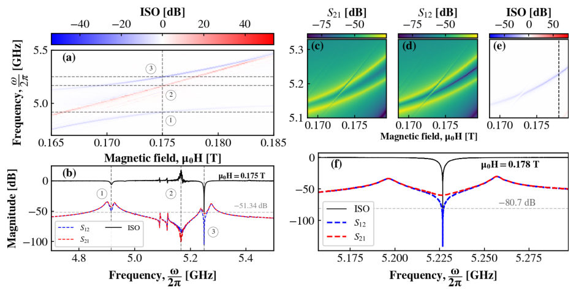
<figcaption class="paper-figure-caption"><b>Fig 5.</b> FIG. 5. (a) Overview of the nonreciprocity quantified by the isolation ratio, ISO. Three branches are apparent which corresponds to the antiresonances, with red indicating larger S12 and blue indicating larger S21. The branches are apparent at (1) between the lower polariton resonances, (2) at the FMR frequency, and (3) between the two upper polariton resonances. The nonreciprocity occurs at the antiresonance frequencies, shown in the frequency sweep at µ0H = 0.175 T (b), where we observe peak ISO of -51.34 dB corresponding to the upper polariton frequency. The gray lines are visual guides. (c-e) A closer look at the antiresonance between the upper polariton resonances, in this window we...</figcaption>
</figure>
</div>

<p><strong>Summary.</strong> This paper investigates how coupling phase interference dictates behavior in complex multimode cavity magnonics systems using YIG spheres. By developing an advanced input-output model that accounts for both internal and external phases, the authors successfully explain observed phenomena like nonreciprocity. The work establishes 'coupling-phase engineering' as a vital design principle for future quantum microwave devices.</p>
<p><strong>Why it may be interesting.</strong> This work is highly relevant as it treats magnon-photon interactions—a core topic in cavity QED/AMO physics—by focusing on the subtle role of quantum phases. The methodology of 'coupling-phase engineering' provides a powerful, generalizable tool for controlling light-matter interaction dynamics.</p>
<details>
<summary>Detailed structure</summary>
<p><strong>Main problem.</strong> The study investigates how coupling phases critically influence interference effects within complex, multimode cavity magnonics systems.</p>
<p><strong>Main result.</strong> The research establishes that engineering these coupling phases is a key principle for accurately modeling and designing advanced cavity magnonics devices, explaining phenomena like position-dependent modes and nonreciprocity.</p>
<p><strong>Method.</strong> The authors employ an input-output model formalism, combining theoretical Hamiltonian analysis with extensive numerical simulations (COMSOL) and comparison against real microwave transmission measurements using a VNA.</p>
<p><strong>Model / system.</strong> The physical system is a cavity magnonics setup involving Yttrium Iron Garnet (YIG) spheres coupled to a four-post re-entrant microwave cavity. The model explicitly incorporates both internal coupling phases (from the magnon field overlap) and external coupling phases (related to far-detuned modes).</p>
<p><strong>Key observables.</strong> Transmission ($S_{12}$) and isolation responses versus frequency and external magnetic field ($\mu_0H$); nonreciprocity at antiresonance frequencies.</p>
<p><strong>Important parameters / regimes.</strong> Internal and external coupling phases ($    heta_{uv}, \varphi_{up}$), cavity/magnon resonance frequencies, and the strong-coupling regime leading to polaritons.</p>
<p><strong>Assumptions / limitations.</strong> The model extends prior work by explicitly including far-detuned modes, which is crucial for correctly predicting nonreciprocity. Simplifications include assuming zero crosstalk between ports in some calculations.</p>
<p><strong>Figures summary.</strong> Figures illustrate the cavity geometry and experimental setup; simulations show magnetic field distributions (EF) and frequency sweeps of transmission spectra ($S_{12}$) compared to experiment.</p>
<p><strong>Paper structure.</strong> The paper builds from defining the physical system and theoretical model using input-output formalism, detailing how internal and external coupling phases are incorporated. It then presents results demonstrating mode splitting, position dependence due to phase interference, and nonreciprocity arising from combined phase effects.</p>
</details>
<details>
<summary>Abstract</summary>
<p>Coupling phases play a decisive yet often overlooked role in cavity magnonics, particularly in complex multimode systems. Here, we investigate phase-mediated interference effects in a cavity magnonics system comprising a four-post re-entrant microwave cavity coupled to Yttrium Iron Garnet (YIG) spheres. Using an input-output model that explicitly accounts for both internal and external coupling phases, we achieve agreement with experimental microwave transmission measurements. Our results unravel the emergence of a positionally-dependent uncoupled mode due to interference of cavity photon-magnon (internal) coupling phases. Further, we experimentally observed large nonreciprocity at the antiresonance frequencies and show that this feature arises due to the far-detuned modes' odd parity cavity photon-probe (external) coupling phase interfering with the internal coupling phases. Bridging theory, simulation and experiment, these results establish coupling-phase engineering as a key principle for accurately modeling and designing multimode cavity magnonics devices.</p>
</details>
<p><sub><a href="#top">↑ back to top</a></sub></p>

<p><a id="paper-2607.19483"></a></p>
<h3 id="optical-magnetic-switching-in-odd-parity-magnets-with-spin-orbit-coupling"><a href="http://arxiv.org/abs/2607.19483v1">Optical Magnetic Switching in Odd-Parity Magnets with Spin-Orbit Coupling</a></h3>
<p><strong>Authors:</strong> SangEun Han, Qiang Li<br>
<strong>Type:</strong> theory · <strong>Category:</strong> other · <strong>PDF:</strong> <a href="https://arxiv.org/pdf/2607.19483v1">https://arxiv.org/pdf/2607.19483v1</a><br>
<strong>Analysis basis:</strong> full PDF text, analyzed in chunks
<strong>Topic relevance:</strong> 🔥 <code>spintronics-quantum-optics interface</code> <strong>4/5</strong> · <code>exotic spin models in light-matter</code> <strong>3/5</strong> · <code>non-equilibrium dynamics</code> <strong>3/5</strong> · <code>analog quantum simulation</code> <strong>2/5</strong> · <code>driven-dissipative phase transition</code> <strong>2/5</strong> · <code>methods for driven-dissipative</code> <strong>2/5</strong> · <code>Keldysh / 2PI / non-Gaussian methods</code> <strong>1/5</strong> · <code>interference shaping light</code> <strong>1/5</strong> · <code>non-equilibrium universality</code> <strong>1/5</strong></p>
<div class="figure-strip-hint">↔ Scroll figures horizontally</div>
<div class="paper-figures-scroll">
<figure class="paper-figure-card">
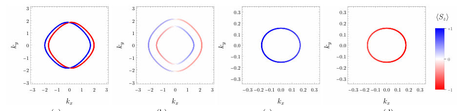
<figcaption class="paper-figure-caption"><b>Fig 1.</b> FIG. 1. The Fermi surfaces before and after introducing polarized light in the square-lattice regularization in the first Brillouin zone. (a) Fermi surface without SOC and light (Ax = Ay = 0, λ = 0). (b) Fermi surface with SOC but without light (Ax = Ay = 0). (c) Fermi surface with polarized light (Ax = Ay = 1.8, η = +1, and λ = 0.6) and (d) Fermi surface with oppositely polarized light (Ax = Ay = 1.8, η = −1, and λ = 0.6). In (c,d), only the lower band is partially occupied for the chosen chemical potential, and the shown Fermi surfaces are those of the lower band. Here, we set t = 1, J = 0.3, ω = 5, θ = 0, and µ = 2.536.</figcaption>
</figure>
<figure class="paper-figure-card">
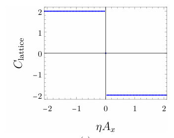
<figcaption class="paper-figure-caption"><b>Fig 2.</b> FIG. 2. The lattice Chern number of the lower Floquet- engineered band on a square lattice as a function of ηAx for fixed Ay. We set t = 1, J = 0.3, λ = 0.6, θ = 0, Ay = 1.8, and change ηAx from −2 to +2. Thus, CPL occurs at ηAx = ±1.8. The Chern number of the Floquet-engineered bands changes sign when ηAx changes sign.</figcaption>
</figure>
<figure class="paper-figure-card">
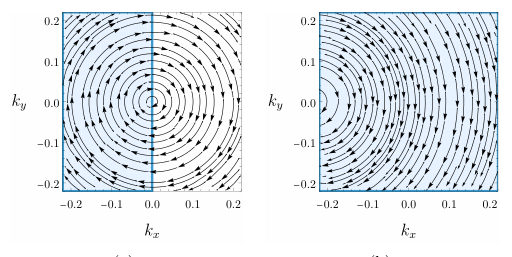
<figcaption class="paper-figure-caption"><b>Fig 3.</b> FIG. 3. The spin texture of the lower band of p-wave magnet with SOC and (a) without and (b) with polarized light in square lattice regularization. The arrows denote the in-plane spin direction, and the shading denotes the normalized out- of-plane spin polarization. We set t = 1, J = 0.3, λ = 0.6, θ = 0, and Ax,y = 1.8.</figcaption>
</figure>
<figure class="paper-figure-card">
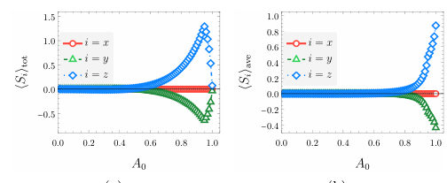
<figcaption class="paper-figure-caption"><b>Fig 4.</b> FIG. 4. The total and averaged spin polarizations over occu- pied states for the effective static Hamiltonian in the square- lattice regularization. (a) The total spin polarization ⟨Si⟩tot. (b) Averaged spin polarization ⟨Si⟩ave. Here we set t = 1, J = 0.3, λ = 0.6, θ = 0, ω = 5, and Ax = Ay = 1.8A0, and increase A0 from 0 to 1 by 0.01.</figcaption>
</figure>
<figure class="paper-figure-card">
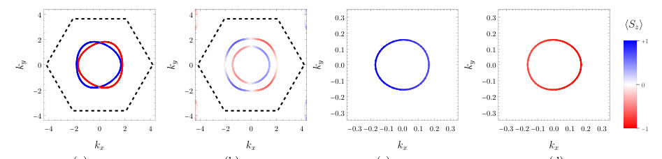
<figcaption class="paper-figure-caption"><b>Fig 5.</b> FIG. 5. The Fermi surfaces before and after introducing polarized light in a triangular-lattice regularization in the first Brillouin zone. (a) Without SOC (λ = 0, Ax,y = 0). (b) With SOC (λ = 0.6, Ax,y = 0). (c-d) With polarized light (λ = 0.6, Ay = Ax = 1.8, and η = ±1 for (c) and (d), respectively). In the light-irradiated cases in (c) and (d), the displayed Fermi surfaces come from the partially occupied lower band, while the upper band remains empty for the chosen chemical potential. We set t = 1, J = 0.3, ω = 5, θ = 0, and µ = 2.536. The dashed lines in (a) and (b) indicate the first Brillouin zone of the triangular lattice.</figcaption>
</figure>
</div>

<p><strong>Summary.</strong> This theoretical study shows that polarized light can dynamically switch the magnetic state of odd-parity magnets possessing SOC. By using Floquet engineering, the authors demonstrate control over both the topological invariant (Chern number) and the net magnetization, opening pathways for optical spintronic applications.</p>
<p><strong>Why it may be interesting.</strong> The work directly connects light polarization to fundamental quantum properties (topology/magnetization) in magnetic materials, providing a powerful tool for understanding optically controlled spintronics.</p>
<details>
<summary>Detailed structure</summary>
<p><strong>Main problem.</strong> The study demonstrates how elliptically polarized light can dynamically switch a zero-net-magnetization p-wave state into a finite spin-polarized state in odd-parity magnets.</p>
<p><strong>Main result.</strong> Polarized light induces a momentum-independent term that controls the system's topological properties (Chern number) and generates a measurable net magnetization, offering a new control mechanism for magnetic states.</p>
<p><strong>Method.</strong> The analysis uses Floquet engineering combined with high-frequency expansion to derive an effective static Hamiltonian, followed by calculating topological invariants like the Chern number in momentum space.</p>
<p><strong>Model / system.</strong> The system models odd-parity magnets exhibiting p-wave spin polarization and strong Spin-Orbit Coupling (SOC). The theoretical framework involves analyzing lattice Hamiltonians on square or triangular lattices subjected to time-periodic driving from polarized light.</p>
<p><strong>Key observables.</strong> Chern number ($\mathcal{C}_{	ext{lattice}}$), total/averaged spin polarization ($\langle S_i 
angle_{	ext{tot}}$, $\langle S_i 
angle_{	ext{ave}}$), and the resulting net magnetization components (out-of-plane for f-wave).</p>
<p><strong>Important parameters / regimes.</strong> The driving field parameters, such as the light polarization strength ($\eta A_x A_y$), are crucial for controlling topological transitions and magnetization magnitude.</p>
<p><strong>Assumptions / limitations.</strong> The analysis relies on high-frequency expansion of the Floquet Hamiltonian, which assumes that internal energy scales are much smaller than the driving frequency ($\omega$).</p>
<p><strong>Figures summary.</strong> Figures illustrate Fermi surface modifications, spin textures (comparing light on/off), and plots showing the sign reversal of the lattice Chern number as a function of light polarization strength.</p>
<p><strong>Paper structure.</strong> The paper establishes the theoretical model for p-wave magnets with SOC, derives effective Hamiltonians using Floquet theory, calculates topological invariants like the Chern number under polarized driving, and discusses experimental signatures in both p-wave and f-wave systems across different lattice regularizations (square vs. triangular).</p>
</details>
<details>
<summary>Abstract</summary>
<p>$p$-wave magnets exhibit odd-parity spin polarization in momentum space, with spin splitting that reverses under $\vec{k}\rightarrow -\vec{k}$, while preserving zero net magnetization. Here we show that, in odd-parity magnets with spin-orbit coupling, elliptically polarized light generates a momentum-independent spin-dependent term that dynamically switches a zero-net-magnetization $p$-wave state into a finite spin-polarized state. The Floquet-engineered bands also acquire a nonzero Chern number whose sign is controlled by the light polarization. For $f$-wave magnets, circularly polarized light induces a net out-of-plane magnetization, offering a direct experimental signature. Our results establish light as an efficient means of controlling magnetic states, with potential applications in spintronics and quantum information.</p>
</details>
<p><sub><a href="#top">↑ back to top</a></sub></p>

<p><a id="paper-2607.19468"></a></p>
<h3 id="confinement-versus-screening-in-the-schwinger-model-on-adsmath57math-from-bosonization-and-tensor-networks"><a href="http://arxiv.org/abs/2607.19468v1">Confinement Versus Screening in the Schwinger Model on AdS$_2$ from Bosonization and Tensor Networks</a></h3>
<p><strong>Authors:</strong> Sriram Bharadwaj, Jack Isen, Zhong-Bo Kang<br>
<strong>Type:</strong> theory · <strong>Category:</strong> numerical methods · <strong>PDF:</strong> <a href="https://arxiv.org/pdf/2607.19468v1">https://arxiv.org/pdf/2607.19468v1</a><br>
<strong>Analysis basis:</strong> full PDF text, analyzed in chunks
<strong>Topic relevance:</strong> 🔥 <code>methods for driven-dissipative</code> <strong>4/5</strong> · <code>Keldysh / 2PI / non-Gaussian methods</code> <strong>3/5</strong> · <code>analog quantum simulation</code> <strong>2/5</strong> · <code>driven-dissipative phase transition</code> <strong>2/5</strong> · <code>non-equilibrium dynamics</code> <strong>2/5</strong> · <code>correlated / nonlocal dissipation</code> <strong>1/5</strong> · <code>correlated cavity matter</code> <strong>1/5</strong> · <code>entanglement &amp; information structure</code> <strong>1/5</strong> · <code>non-equilibrium universality</code> <strong>1/5</strong></p>
<div class="figure-strip-hint">↔ Scroll figures horizontally</div>
<div class="paper-figures-scroll">
<figure class="paper-figure-card">
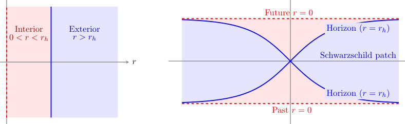
<figcaption class="paper-figure-caption"><b>Fig 1.</b> Figure 1: Two coordinate representations of the same spacetime. (Left): The regularized static patch coordinates (T, r): in this local frame, the singularity at r = 0 appears as a vertical spatial boundary, and the bifurcate Killing horizon at r = rh is represented as a stationary radial location. (Right): The same spacetime mapped into global AdS2 coordinates (τ, ρ): in this global covering space, the horizon unfolds into intersecting light-like rays (cos τ = sech ρ), and the r = 0 point maps directly to spacelike boundaries at constant global time (τ = ±π/2).</figcaption>
</figure>
<figure class="paper-figure-card">
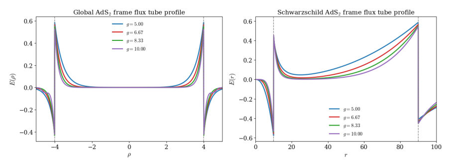
<figcaption class="paper-figure-caption"><b>Fig 2.</b> Figure 2: Electric field profile for a neutral pair of external charges q1 = −q2 = q, plotted for several values of the gauge coupling g: global AdS2, E(ρ) (left), and the Schwarzschild frame, E(r) (right). The dashed vertical lines mark the charge insertions at ρ = ρ1,2 (resp. r = r1,2). Dynamical massless fermions screen the flux tube, producing tails outside the interval between the charges; in the weak-coupling limit the profile approaches the sharp constant background field between the charges, while increasing g smooths it, and when L/ν ≪d the field for r ∈[r1, r2] is exponentially small in g. Unlike the Schwarzschild-frame profile, the global profile is not a function only of the...</figcaption>
</figure>
<figure class="paper-figure-card">
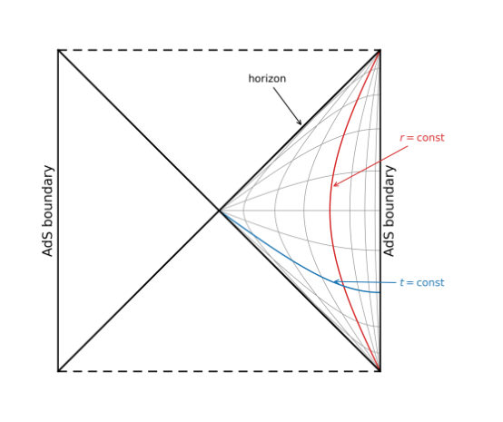
<figcaption class="paper-figure-caption"><b>Fig 3.</b> Figure 3: Penrose diagram of AdS2 Schwarzschild black hole. Timelike curves are r = constant (e.g. the red curve) and spacelike curves are t = constant (e.g. the blue curve).</figcaption>
</figure>
<figure class="paper-figure-card">
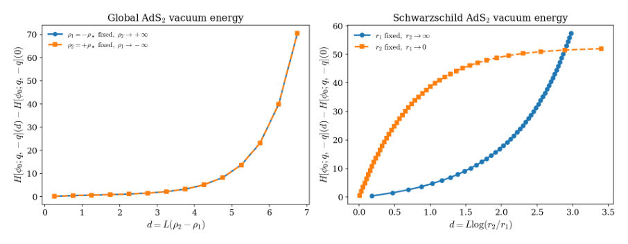
<figcaption class="paper-figure-caption"><b>Fig 4.</b> Figure 4: The above figure shows plots of the vacuum energy in the presence of a q¯q-pair as a function of their geodesic separation in both global AdS2 (left) and Schwarzschild (right) frames prior to the self-energy subtraction.</figcaption>
</figure>
<figure class="paper-figure-card">
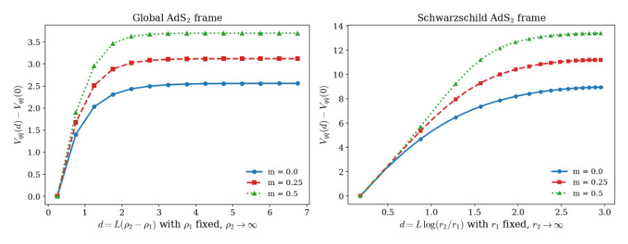
<figcaption class="paper-figure-caption"><b>Fig 5.</b> Figure 5: Static q¯q potential Vq¯q(d) −Vq¯q(0), obtained from the ground-state energy of a static charge pair by subtracting the (screened) single-charge self-energies, for masses m = 0, 0.25, 0.5. Left: global AdS2 with fixed ρ1 (N = 48, a = 0.25, geodesic separation D = L(ρ2 −ρ1)). Right: Schwarzschild AdS2 frame with fixed r1 (N = 100, a = 1, separation d = L ln(r2/r1)). Lattice spacing a in the respective radial coordinate; L = 1, e = 2.51 throughout.</figcaption>
</figure>
</div>

<p><strong>Summary.</strong> This paper resolves a long-standing ambiguity regarding confinement versus screening in QED$_2$ on $ ext{AdS}_2$. By rigorously subtracting position-dependent self-energies, the authors prove that the theory is screened. They validate this finding using a combination of analytical bosonization and advanced numerical techniques like tensor networks.</p>
<p><strong>Why it may be interesting.</strong> While primarily condensed matter/high energy theory, the use of Tensor Networks (MPS ansatz) to simulate quantum field theories on curved backgrounds provides a powerful computational methodology relevant to strongly correlated systems studied in AMO physics.</p>
<details>
<summary>Detailed structure</summary>
<p><strong>Main problem.</strong> The primary goal is resolving the ambiguity regarding confinement versus screening in the Schwinger Model (QED$_2$) on curved Anti-de Sitter space ($   ext{AdS}_2$). This required careful handling of self-energy subtractions and lattice discretization.</p>
<p><strong>Main result.</strong> The theory is definitively found to be screened, as the static potential remains finite at infinite separation after subtracting position-dependent self-energies. This result is consistent across continuum bosonization, lattice simulations, and real-time evolution studies.</p>
<p><strong>Method.</strong> The work employs a combination of analytical techniques (bosonization), advanced numerical methods like Tensor Networks (Matrix Product States/DMRG), and time-evolution simulations using the Time-Dependent Variational Principle (TDVP).</p>
<p><strong>Model / system.</strong> The system is single-flavor Quantum Electrodynamics ($  ext{QED}_2$) on $   ext{AdS}_2$, studied in both continuum and lattice formulations, including backgrounds with black holes. The Hamiltonian must be carefully discretized to maintain manifest Hermiticity.</p>
<p><strong>Key observables.</strong> Static charge-anticharge potential ($V_{qar{q}}(d)$), electric flux-tube profile ($\langle E 
angle$), and real-time evolution of charge/field densities.</p>
<p><strong>Important parameters / regimes.</strong> Fermion mass ($m$), temperature (zero vs. finite), and the choice of preferred time coordinate (Schwarzschild vs. global $   ext{AdS}_2$ frame).</p>
<p><strong>Assumptions / limitations.</strong> The crucial assumption is that the static potential must be calculated after subtracting position-dependent probe self-energies to obtain a physically meaningful, finite result.</p>
<p><strong>Figures summary.</strong> Figures illustrate the comparison of the screened static potential in both coordinate frames and show the exponential decay of the electric flux profile ($\langle E 
angle$) on the lattice compared to continuum predictions. Real-time evolution figures demonstrate string breaking.</p>
<p><strong>Paper structure.</strong> The paper proceeds by first establishing the theoretical framework using two different time coordinates, then deriving the static potential via bosonization (continuum), proposing a covariant lattice discretization, and finally validating these results through tensor network simulations and real-time dynamics.</p>
</details>
<details>
<summary>Abstract</summary>
<p>We analyze confinement and screening in single-flavor quantum electrodynamics (QED$_2$) on two-dimensional anti-de Sitter space (AdS$_2$), with and without a Schwarzschild black hole, both in the continuum and on the lattice. The theory is formulated in two frames adapted to distinct choices of a preferred time coordinate: the Schwarzschild frame, associated with the Boulware vacuum, and the global AdS$_2$ frame, associated with the $\mathrm{SL}(2,\mathbb{R})$-invariant vacuum. In the massless limit, the static potential between an external charge-anticharge pair is obtained in closed form by bosonization, at both zero and finite temperature. After subtraction of the position-dependent probe self-energies, which, unlike in flat space, are not constant, the potential remains finite as the geodesic separation is taken to infinity, establishing that the theory is screened. This is consistent with the explicit breaking of the $\mathrm{U}(1)$ electric one-form symmetry by the dynamical fermions, and resolves a confining/screening ambiguity in earlier treatments that identify the static potential with the unsubtracted ground-state energy. To validate the continuum analysis, we propose a covariant discretization scheme for placing fermions in curved spacetime on the lattice while ensuring that the continuum properties of the spin and gauge connections are restored in the continuum limit. This construction resolves ambiguities in the existing literature on lattice fermions in curved backgrounds and provides the foundation for our tensor-network simulations. Using a matrix product state ansatz, we confirm our analytical predictions for the phase diagram in AdS$_2$. We perform extensive numerical simulations of the static potential and the electric flux-tube profile for varying fermion masses, which we match to the continuum prediction.</p>
</details>
<p><sub><a href="#top">↑ back to top</a></sub></p>

<p><a id="paper-2607.19963"></a></p>
<h3 id="emergence-of-hexanematic-order-in-a-growing-confluent-cell-monolayer"><a href="http://arxiv.org/abs/2607.19963v1">Emergence of Hexanematic Order in a Growing Confluent Cell Monolayer</a></h3>
<p><strong>Authors:</strong> Hon Lin Too, Farisan Dary, Isaac Si Yuan Ling, Dustin Erhard Theofilusa, Duo Zhang, Haiyi Liang, Ee Hou Yong<br>
<strong>Type:</strong> theory · <strong>Category:</strong> statistical mechanics · <strong>PDF:</strong> <a href="https://arxiv.org/pdf/2607.19963v1">https://arxiv.org/pdf/2607.19963v1</a><br>
<strong>Analysis basis:</strong> full PDF text, analyzed in chunks
<strong>Topic relevance:</strong> 🔥 <code>non-equilibrium dynamics</code> <strong>4/5</strong> · <code>driven-dissipative phase transition</code> <strong>3/5</strong> · <code>methods for driven-dissipative</code> <strong>3/5</strong> · <code>non-equilibrium universality</code> <strong>3/5</strong> · <code>Frenkel-Kontorova</code> <strong>1/5</strong> · <code>Keldysh / 2PI / non-Gaussian methods</code> <strong>1/5</strong> · <code>analog quantum simulation</code> <strong>1/5</strong> · <code>correlated / nonlocal dissipation</code> <strong>1/5</strong></p>
<div class="figure-strip-hint">↔ Scroll figures horizontally</div>
<div class="paper-figures-scroll">
<figure class="paper-figure-card">
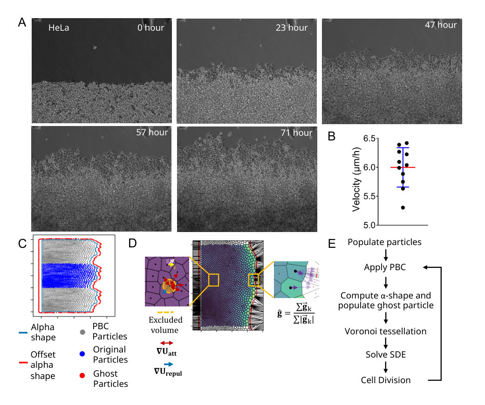
<figcaption class="paper-figure-caption"><b>Fig 1.</b> FIG. 1. Overview of our computational model. (A) Time-lapse images of wound closure in a HeLa cell monolayer: peripheral cells are larger and elongated, while bulk cells are smaller and more regular. (B) Boxplot of the border speed measured across 11 independent experiments, with a mean value of 6.0µm/hr. (C) Particle distribution before Voronoi tessellation. Blue: real particles; grey: periodic copies. The alpha shape defines the boundary, which is offset outward to place ghost particles. (D) Illustration of particle dynamics. Cell velocity and motility vector are updated through interactions with Voronoi neighbors. (E) Simulation workflow.</figcaption>
</figure>
<figure class="paper-figure-card">
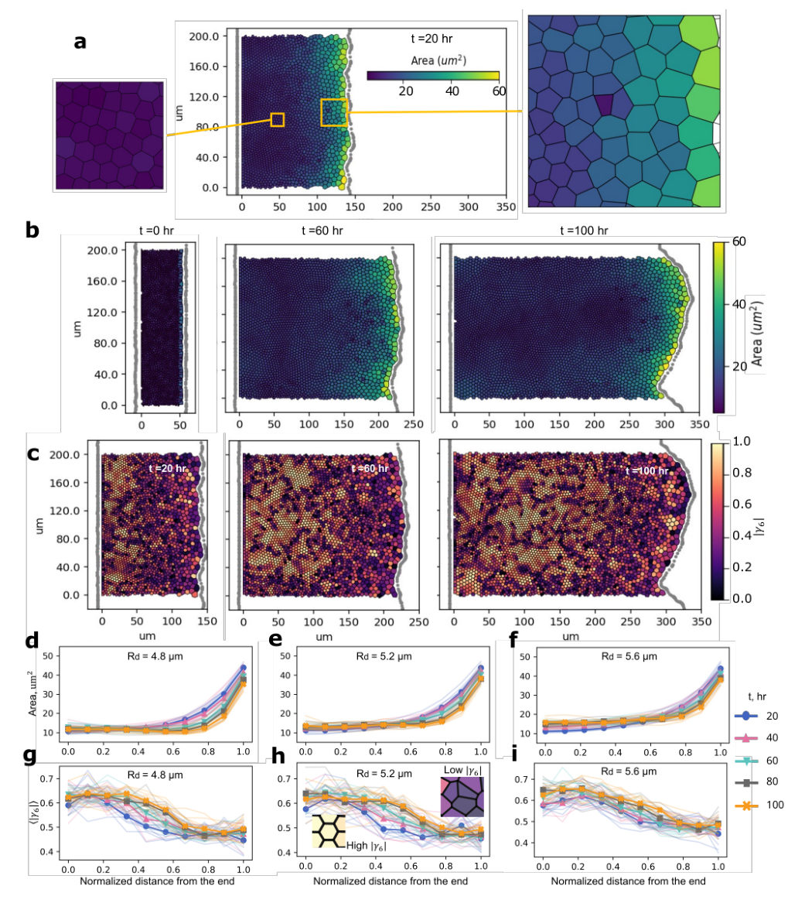
<figcaption class="paper-figure-caption"><b>Fig 2.</b> FIG. 2. Cell morphology in simulation. (A) Representative Voronoi tessellation at t = 20 hr for Rd = 5.2µm and β = 0.12. Insets highlight peripheral and bulk regions: bulk cells are smaller and more regularly packed, while peripheral cells are larger and more irregular. (B and C) Representative tessellations at t = 20, 60, and 100 hr showing evolution of cell area and hexatic order over time. (D-F) Ensemble-averaged local mean cell area, ⟨A(x)⟩, and (G-I) ensemble-averaged local mean hexatic order, ⟨|γ6(x)|⟩as functions of normalized end-to-end distance along cell sheet at five time points (t = 20, 40, 60, 80, 100 hr) for β = 0.16 and three different minimum division lengths Rd. Dark lines...</figcaption>
</figure>
<figure class="paper-figure-card">
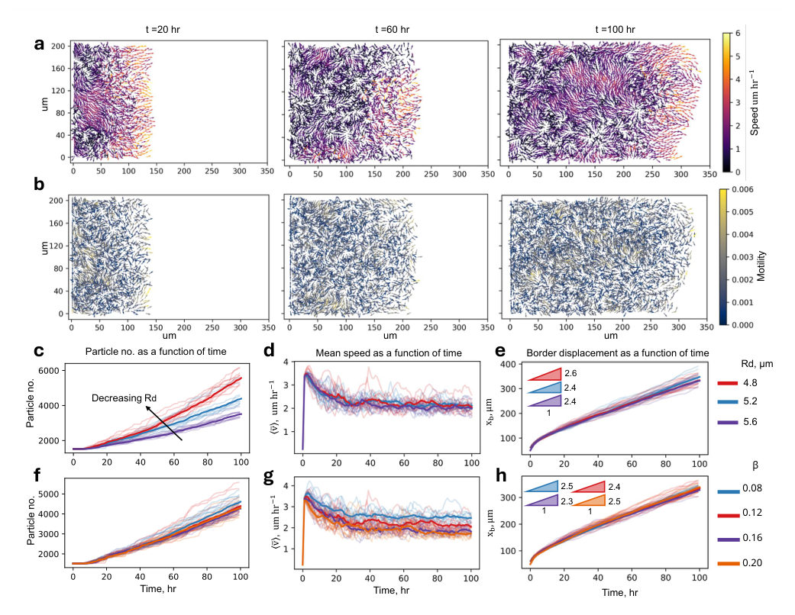
<figcaption class="paper-figure-caption"><b>Fig 3.</b> FIG. 3. Dynamics of cell migration. (A and B) Representative velocity and motility fields at t = 20, 60, and 100 hr. Arrow color encodes magnitude (yellow = larger). Velocities are generally higher at the periphery than in the bulk. (C and F) Total particle number, Nt, (D and G mean speed ¯v, and (E and H) maximum border displacement, xb, as a function of time for different minimum division lengths, Rd, and motility coupling constants, β. Bold lines denote ensemble averaging across 10 independent simulations; fine lines (in lighter colors) show individual runs.</figcaption>
</figure>
<figure class="paper-figure-card">
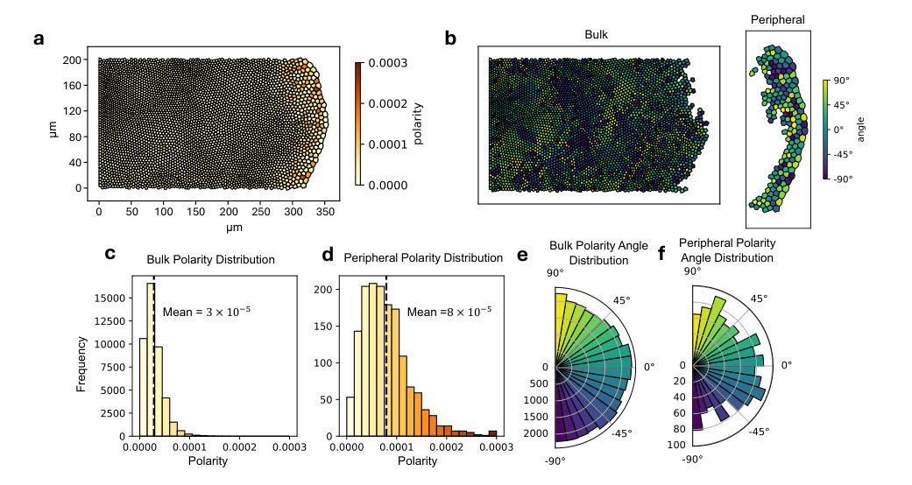
<figcaption class="paper-figure-caption"><b>Fig 4.</b> FIG. 4. Cell polarity statistics. (A and B) Representative cell polarity map at t = 100 hr for β = 0.16 and Rd = 5.2µm. The yellow-brown colormap (A) indicates polarity magnitude, while the blue-yellow colormap (B) encodes the angle of the largest eigenvector relative to the x-axis. (C and D) Histogram of cell polarity magnitude and (E and F) polar plot of cell polarity orientation, averaged over 10 independent simulations.</figcaption>
</figure>
<figure class="paper-figure-card">
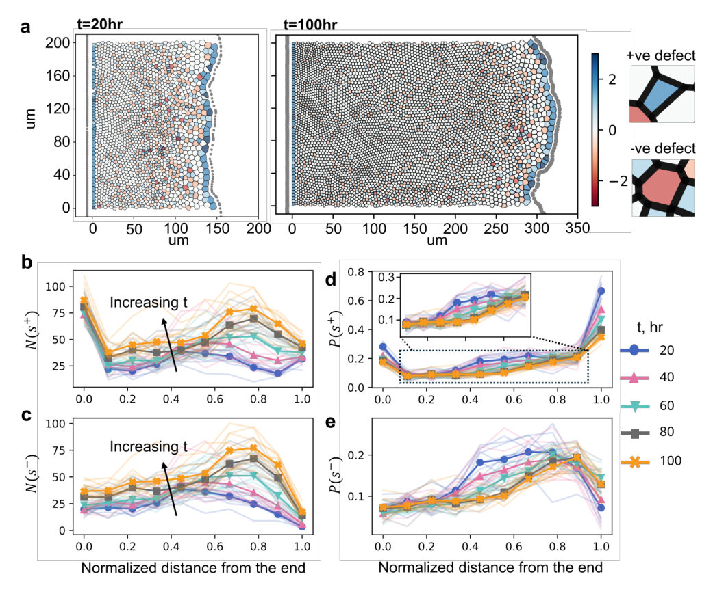
<figcaption class="paper-figure-caption"><b>Fig 5.</b> FIG. 5. Topological defects in cell migration. (A) Representative Voronoi tessellation at t = 20 hr and t = 100 hr for Rd = 5.6µm and β = 0.12. Blue/red cells denote positive/negative topological defects as illustrated schematically on the right. (B) and (C) Spatial distribution of (B) positive and (C) negative topological defect, N+(x) and N −(x), as functions of the normalized distance from the tissue edge at t = 20, 40, 60, 80, and 100 hr. (D) and (E) Probability of (D) positive and (E) negative topological defect as functions of normalized end-to-end distance along cell sheet at t = 20, 40, 60, 80, and 100 hr. The inset in (D) shows the same plot but excluding the first and last points...</figcaption>
</figure>
</div>

<p><strong>Summary.</strong> This work models collective cell migration using a stochastic particle-Voronoi simulation. It demonstrates that simple mechanical interactions create an outward velocity gradient, which spontaneously organizes the monolayer into distinct regions: tightly packed, hexatically ordered bulk cells, and larger, more elongated peripheral cells. This highlights how complex tissue patterning can arise from minimal local physical rules.</p>
<p><strong>Why it may be interesting.</strong> While focused on biology, the underlying mathematical framework—modeling pattern formation, phase transitions (hexatic order), and non-equilibrium steady states using stochastic dynamics—is highly relevant to active matter physics studied in AMO and statistical mechanics.</p>
<details>
<summary>Detailed structure</summary>
<p><strong>Main problem.</strong> The study investigates how distinct cell morphologies (hexanematic vs. elongated) emerge spontaneously within a single, growing confluent epithelial monolayer during collective migration.</p>
<p><strong>Main result.</strong> The authors show that minimal, non-equilibrium mechanical interactions generate an outward velocity gradient, which drives the spontaneous segregation into highly ordered bulk cells and more spread peripheral cells.</p>
<p><strong>Method.</strong> A stochastic particle–Voronoi framework is developed to simulate cell dynamics, incorporating coupled Stochastic Differential Equations (SDEs) for cell velocity and motility vectors.</p>
<p><strong>Model / system.</strong> The model simulates confluent cell monolayers using a Voronoi tessellation approach. Cell movement is governed by mechanical interactions derived from the particle positions, allowing for adaptive growth and division based on local density and area thresholds.</p>
<p><strong>Key observables.</strong> Local mean cell area ($\langle A(x) 
angle$), hexatic order parameter ($|\gamma_6|$), topological defect density ($s$), and spatial velocity gradients.</p>
<p><strong>Important parameters / regimes.</strong> Division radius ($R_d$), noise amplitude ($\sigma_i$) which is density-dependent, and the coupling constants within the SDEs.</p>
<p><strong>Assumptions / limitations.</strong> The emergence of pattern is attributed solely to minimal local mechanical rules, without pre-specifying cell types or target geometries; periodic boundary conditions are used along one axis.</p>
<p><strong>Figures summary.</strong> Figures illustrate time-lapse images showing peripheral elongation versus bulk regularity, and spatial profiles demonstrating the inverse correlation between hexatic order (high in the bulk) and cell area (increasing toward the front).</p>
<p><strong>Paper structure.</strong> The paper introduces the stochastic particle-Voronoi model, details the governing SDEs and boundary conditions, presents simulations showing morphological segregation and defect accumulation, and concludes by interpreting these findings as evidence for emergent tissue patterning driven by mechanical gradients.</p>
</details>
<details>
<summary>Abstract</summary>
<p>Collective migration of epithelial layers underlies processes ranging from wound healing to cancer invasion. A defining yet challenging feature is the emergence of distinct cell morphologies within a single migrating confluent sheet, with larger, elongated cells at the active boundary and smaller, hexatically ordered cells in the bulk. Here, we develop a stochastic particle-Voronoi framework that captures this hexanematic organization without prescribing target geometries and distinct cell types. We show that boundary-driven collective motion generates an outward velocity gradient. This gradient, coupled to a density and velocity-dependent division rule, produces peripheral cells that are larger, more elongated, and more defect-prone, while bulk cells remain smaller, isotropic, and hexagonally packed. These results show how minimal, non-equilibrium mechanical interactions give rise to emergent, self-organized tissue-scale patterning during collective migration.</p>
</details>
<p><sub><a href="#top">↑ back to top</a></sub></p>

<p><a id="paper-2607.19702"></a></p>
<h3 id="exact-closed-form-quantum-correlations-of-maximally-entangled-qudit-states-under-arbitrary-non-markovian-pure-dephasing"><a href="http://arxiv.org/abs/2607.19702v1">Exact Closed-Form Quantum Correlations of Maximally Entangled Qudit States under Arbitrary Non-Markovian Pure Dephasing</a></h3>
<p><strong>Authors:</strong> Ahmad Akhound<br>
<strong>Type:</strong> theory · <strong>Category:</strong> quantum information and computing · <strong>PDF:</strong> <a href="https://arxiv.org/pdf/2607.19702v1">https://arxiv.org/pdf/2607.19702v1</a><br>
<strong>Analysis basis:</strong> full PDF text, analyzed in chunks
<strong>Topic relevance:</strong> 🔥 <code>entanglement &amp; information structure</code> <strong>4/5</strong> · <code>correlated / nonlocal dissipation</code> <strong>3/5</strong> · <code>methods for driven-dissipative</code> <strong>3/5</strong> · <code>driven-dissipative phase transition</code> <strong>2/5</strong> · <code>non-equilibrium dynamics</code> <strong>2/5</strong> · <code>Keldysh / 2PI / non-Gaussian methods</code> <strong>1/5</strong> · <code>analog quantum simulation</code> <strong>1/5</strong> · <code>non-equilibrium universality</code> <strong>1/5</strong></p>
<div class="figure-strip-hint">↔ Scroll figures horizontally</div>
<div class="paper-figures-scroll">
<figure class="paper-figure-card">
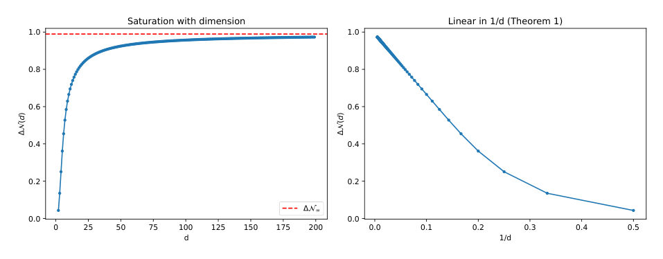
<figcaption class="paper-figure-caption"><b>Fig 1.</b> FIG. 1. Visual confirmation of the saturation law (baseline regime). Left: the oscillation amplitude</figcaption>
</figure>
<figure class="paper-figure-card">
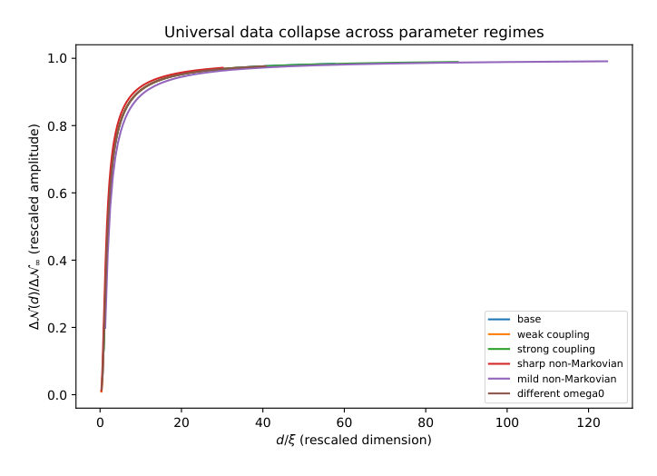
<figcaption class="paper-figure-caption"><b>Fig 2.</b> FIG. 2. Rescaled comparison of the normalized amplitude ∆N(d)/∆N∞versus d/ξ, with ξ evalu-</figcaption>
</figure>
<figure class="paper-figure-card">
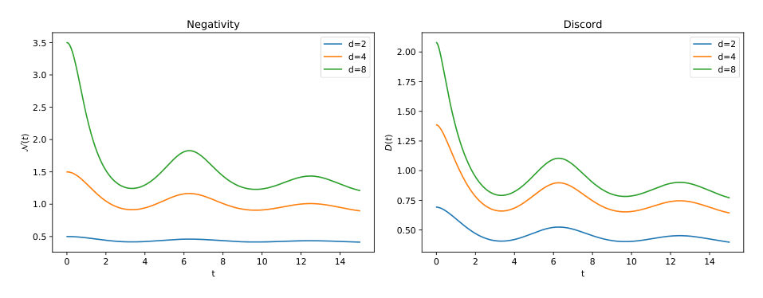
<figcaption class="paper-figure-caption"><b>Fig 3.</b> FIG. 3. Raw dynamics of the negativity N(t) (left) and discord D(t) (right) for dimensions</figcaption>
</figure>
<figure class="paper-figure-card">
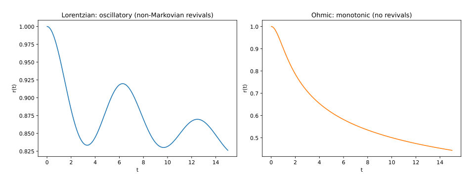
<figcaption class="paper-figure-caption"><b>Fig 4.</b> FIG. 4. Comparison of r(t) for the two spectral-density classes: Lorentzian (left), characterized by</figcaption>
</figure>
</div>

<p><strong>Summary.</strong> This work derives exact closed-form expressions for the time evolution of entanglement and quantum discord for qudit pairs under non-Markovian pure dephasing. By using an exact solution method, it bypasses common approximations in open quantum system theory. The results establish precise scaling laws for how these correlations decay as the dimension increases.</p>
<p><strong>Why it may be interesting.</strong> It provides rigorous analytical tools to characterize entanglement decay in complex open quantum systems (qudits) without relying on standard approximations, which is crucial for modeling realistic physical platforms like superconducting circuits or trapped ions.</p>
<details>
<summary>Detailed structure</summary>
<p><strong>Main problem.</strong> The study aims to find exact, closed-form expressions for quantum entanglement (negativity) and quantum discord of maximally entangled qudit states undergoing non-Markovian pure dephasing.</p>
<p><strong>Main result.</strong> Closed-form formulas are derived for both negativity and quantum discord as finite sums, demonstrating a dimension-independent saturation limit with a $1/d$ convergence rate.</p>
<p><strong>Method.</strong> The analysis exploits the Toeplitz structure of the density matrix resulting from an exact solution of the independent boson model, bypassing standard approximations like Born-Markov or Lindblad equations.</p>
<p><strong>Model / system.</strong> The system consists of two qudits (dimension $d$) initialized in a maximally entangled state and subjected to pure dephasing interaction with local bosonic reservoirs. The dynamics are governed by an exact propagator derived from the independent boson model.</p>
<p><strong>Key observables.</strong> Negativity, Quantum Discord, Convergence Rate ($1/d$), Gaussian error bound ($e^{-\alpha d^2}$).</p>
<p><strong>Important parameters / regimes.</strong> Qudit dimension $d$, time evolution $t$, spectral density type (Lorentzian, Ohmic).</p>
<p><strong>Assumptions / limitations.</strong> The primary results are derived from the exact dynamics of the independent boson model; minor discrepancies noted in supplementary checks relate to limitations of an auxiliary pseudomode approach.</p>
<p><strong>Paper structure.</strong> The paper establishes the physical model and Hamiltonian, derives the time evolution using the exact propagator, calculates negativity via partial transposition eigenvalues, determines quantum discord by exploiting measurement optimality, and finally analyzes the asymptotic scaling laws for both quantities.</p>
</details>
<details>
<summary>Abstract</summary>
<p>We study the time evolution of entanglement and quantum discord for a pair of maximally entangled qudits of arbitrary dimension $d$ under non-Markovian pure dephasing, using the exact solution of the independent boson model. Because this solution requires no Born--Markov, Lindblad, or rotating-wave approximation, every result reported here follows directly from the exact dynamics. Exploiting the Toeplitz structure of the resulting density matrix, we obtain a closed-form expression for the negativity as a finite sum, valid for arbitrary dimension and evolution time, together with a corresponding closed-form expression for the quantum discord. For the family of dephased maximally entangled states considered here, we prove that a computational-basis measurement is globally optimal over the entire POVM space, thereby eliminating the numerical optimization otherwise required for evaluating the quantum discord. We further show that both quantities saturate, as the dimension grows, to a dimension-independent limiting value, with a convergence rate of exactly $1/d$. For negativity, this scaling law is established through a rigorous theorem, including a Gaussian-type error bound of order $e^{-αd^2}$, and is confirmed across six independent parameter regimes for two distinct classes of spectral density, Lorentzian and Ohmic; for discord, the same leading-order behavior is found numerically across the six Lorentzian regimes. The analytical results are validated by independent numerical approaches, including reconstruction from the underlying definitions, arbitrary-precision arithmetic, and a complementary pseudomode cross-check.</p>
</details>
<p><sub><a href="#top">↑ back to top</a></sub></p>

<p><a id="paper-2607.19840"></a></p>
<h3 id="emergence-of-giant-vortices-under-nonlinear-rotation-with-attractive-interactions-in-a-toroidal-condensate"><a href="http://arxiv.org/abs/2607.19840v1">Emergence of giant vortices under nonlinear rotation with attractive interactions in a toroidal condensate</a></h3>
<p><strong>Authors:</strong> Rony Boral, Swarup K. Sarkar, Matthew Edmonds, Paulsamy Muruganandam, Pankaj Kumar Mishra<br>
<strong>Type:</strong> theory · <strong>Category:</strong> quantum gases · <strong>PDF:</strong> <a href="https://arxiv.org/pdf/2607.19840v1">https://arxiv.org/pdf/2607.19840v1</a><br>
<strong>Analysis basis:</strong> full PDF text, analyzed in chunks
<strong>Topic relevance:</strong> 🔥 <code>analog quantum simulation</code> <strong>4/5</strong> · <code>methods for driven-dissipative</code> <strong>3/5</strong> · <code>non-equilibrium dynamics</code> <strong>3/5</strong> · <code>driven-dissipative phase transition</code> <strong>2/5</strong> · <code>non-equilibrium universality</code> <strong>2/5</strong> · <code>Frenkel-Kontorova</code> <strong>1/5</strong> · <code>Keldysh / 2PI / non-Gaussian methods</code> <strong>1/5</strong></p>
<div class="figure-strip-hint">↔ Scroll figures horizontally</div>
<div class="paper-figures-scroll">
<figure class="paper-figure-card">
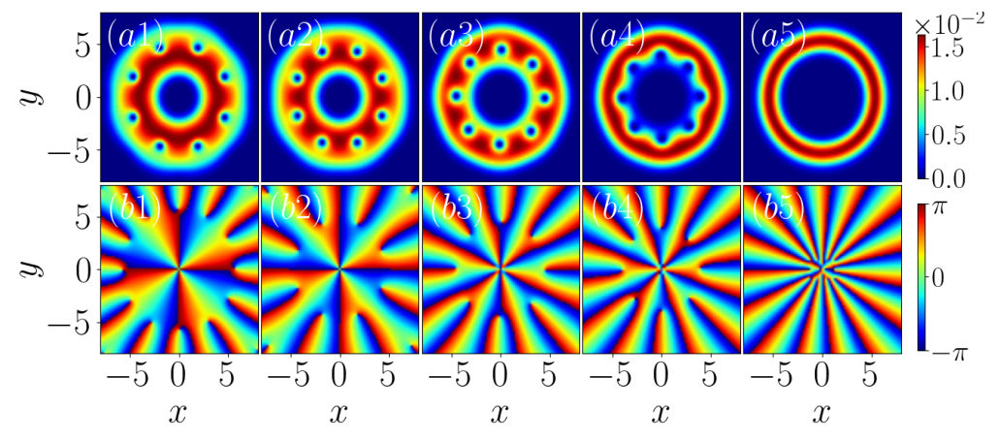
<figcaption class="paper-figure-caption"><b>Fig 1.</b> FIG. 1. Pseudo color representations of the condensate density for ˜C = −40, −20, 0, 6, and 12 [(a1)–(a5)] at Ω= 0.45 and g = 250. Panels (b1)–(b5) display the corresponding phase profiles of the densities shown in (a1)–(a5).</figcaption>
</figure>
<figure class="paper-figure-card">
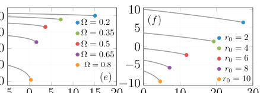
<figcaption class="paper-figure-caption"><b>Fig 2.</b> FIG. 2. Parameter space stability diagram. Panels (a) and (b) show the allowed solution regimes in the (r0, C) and (g, C) parameter planes respectively. The allowed domains of the chemical potential µ in terms of the nonlinear rotation strength C are presented in panels (c)-(f). Solution branches are computed for different values of the quantum circulation ν (c), the van der Waals interaction strength g (d), rigid-body rotation Ω(e) and ring radius r0.</figcaption>
</figure>
<figure class="paper-figure-card">
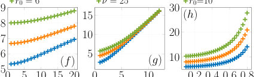
<figcaption class="paper-figure-caption"><b>Fig 3.</b> FIG. 3. Thomas-Fermi profiles. (a)-(c) show example radial density profiles, solutions to Eqs. (14) and (15) with corre- sponding cartesian densities in panels (i)-(iii). These solu- tions are indicated within the parameter space for the nonlin- ear rotation strength C and chemical potential µ in (d) and (e). Meanwhile panels (f)-(h) explore the behaviour of the point at which the ring disappears Rin = Rout for different combinations of the model’s parameters.</figcaption>
</figure>
<figure class="paper-figure-card">
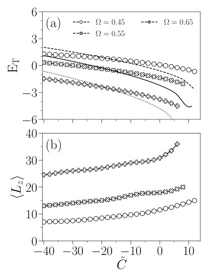
<figcaption class="paper-figure-caption"><b>Fig 4.</b> FIG. 4. (a) The variation of total energy ET, and (b) angular momentum ⟨Lz⟩as a function of nonlinear rotation strength ˜C, for rotational frequencies Ω= 0.45, 0.55, and 0.65. The black dashed, dotted, and dash-dotted lines show the energy prediction from the Thomas-Fermi density distribution. The total energy decreases as ˜C increases, while the angular mo- mentum increases with ˜C.</figcaption>
</figure>
<figure class="paper-figure-card">
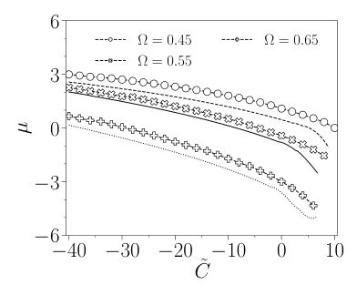
<figcaption class="paper-figure-caption"><b>Fig 5.</b> FIG. 5. The variation of the chemical potential µ as a func- tion of the nonlinear rotation strength ˜C for rotational fre- quencies Ω= 0.45, 0.55, and 0.65. The black dashed, solid, and dotted lines represent the corresponding predictions from the Thomas–Fermi density distribution.</figcaption>
</figure>
</div>

<p><strong>Summary.</strong> This paper numerically investigates how nonlinear rotation affects vortex lattices in a toroidal Bose-Einstein condensate. The key finding is that increasing the rotation strength causes a structural transition to a giant vortex state. By analyzing excitation spectra and stability, the work provides detailed insights into the interplay between topology, external fields, and quantum fluid dynamics.</p>
<p><strong>Why it may be interesting.</strong> This work directly addresses complex many-body dynamics in ultracold atomic systems, particularly how engineered gauge fields and rotational effects can fundamentally alter topological structures like vortices in a toroidal trap.</p>
<details>
<summary>Detailed structure</summary>
<p><strong>Main problem.</strong> The study investigates the structural transition of vortex lattices, specifically from ring-shaped to a giant vortex state, within a Bose-Einstein condensate subjected to nonlinear rotation.</p>
<p><strong>Main result.</strong> Increasing the strength of the nonlinear rotation drives this structural transition, and the quantum circulation associated with the resulting giant vortex is highly sensitive to the rotation strength and chemical potential regime.</p>
<p><strong>Method.</strong> The research employs numerical simulations solving the Gross-Pitaevskii equation, supplemented by Bogoliubov de Gennes analysis and hydrodynamic modeling.</p>
<p><strong>Model / system.</strong> The system is a Bose-Einstein condensate confined in a toroidal geometry. The dynamics are governed by a mean-field GP equation incorporating a density-dependent gauge potential that induces nonlinear rotation.</p>
<p><strong>Key observables.</strong> Vortex lattice structure, quantum circulation ($
u$), excitation spectrum (breathing mode frequency), and the validity regime of the Thomas-Fermi approximation.</p>
<p><strong>Important parameters / regimes.</strong> Nonlinear rotation strength ($  ilde{C}$ or $\Omega_n$), toroidal radius ($r_0$), nonlinear interaction strength ($g$), and chemical potential ($\mu$).</p>
<p><strong>Assumptions / limitations.</strong> The analysis relies on mean-field theory, an adiabatic approximation, and the assumption that the gauge potential is induced by specific Rabi couplings.</p>
<p><strong>Figures summary.</strong> Figures illustrate density and phase profiles for varying nonlinear rotation strength ($   ilde{C}$), mapping out allowed solution regimes in parameter space (e.g., $(	ext{r}_0, 	ilde{C})$ plane).</p>
<p><strong>Paper structure.</strong> The paper progresses from establishing the governing GP equation under nonlinear rotation to numerically demonstrating the vortex lattice transition. It then analyzes the resulting excitation spectrum via BdG theory and concludes with hydrodynamic stability analyses.</p>
</details>
<details>
<summary>Abstract</summary>
<p>We numerically investigate the effects of a density-dependent gauge potential which induces nonlinear rotation on a Bose-Einstein condensate confined in a toroidal trapping geometry. By focusing on the resulting vortex lattice configurations, we demonstrate that increasing the strength of the nonlinear rotation leads to a structural transition from a ring-shaped vortex lattice to a giant vortex state. The quantum circulation associated with the giant vortex is found to be highly sensitive to the strength of the nonlinear rotation and the giant vortex appears in the regime of negative chemical potential. Additionally, we identify the parameter regime in which the Thomas-Fermi density profile remains valid by mapping the solution space based on the strength of the nonlinear rotation and the radius of the confining potential. Based on the Bogoliubov de Gennes analysis, we investigate the impact of nonlinear rotation on the collective excitation spectrum. Our results reveal a violation of the Kohn theorem, accompanied by changes in the breathing mode frequency that indicate radial deformation of the condensate. Our findings are further substantiated through a comprehensive hydrodynamic analysis. Finally, we analyze the stability of multiply quantized vortices under nonlinear rotation. Our findings indicate that while nonlinear rotation can enhance the global stability of these states, it does not necessarily ensure their local stability.</p>
</details>
<p><sub><a href="#top">↑ back to top</a></sub></p>

<p><a id="paper-2607.19763"></a></p>
<h3 id="energy-flux-as-an-entanglement-current-in-moving-mirror-radiation"><a href="http://arxiv.org/abs/2607.19763v1">Energy Flux as an Entanglement Current in Moving-Mirror Radiation</a></h3>
<p><strong>Authors:</strong> Yasusada Nambu, Riku Yoshimoto<br>
<strong>Type:</strong> theory · <strong>Category:</strong> other · <strong>PDF:</strong> <a href="https://arxiv.org/pdf/2607.19763v1">https://arxiv.org/pdf/2607.19763v1</a><br>
<strong>Analysis basis:</strong> full PDF text, analyzed in chunks
<strong>Topic relevance:</strong> 🔥 <code>entanglement &amp; information structure</code> <strong>4/5</strong> · <code>analog quantum simulation</code> <strong>2/5</strong> · <code>non-equilibrium dynamics</code> <strong>2/5</strong> · <code>Keldysh / 2PI / non-Gaussian methods</code> <strong>1/5</strong> · <code>correlated / nonlocal dissipation</code> <strong>1/5</strong> · <code>driven-dissipative phase transition</code> <strong>1/5</strong> · <code>methods for driven-dissipative</code> <strong>1/5</strong> · <code>non-equilibrium universality</code> <strong>1/5</strong></p>
<div class="figure-strip-hint">↔ Scroll figures horizontally</div>
<div class="paper-figures-scroll">
<figure class="paper-figure-card">

<figcaption class="paper-figure-caption"><b>Fig 1.</b> Figure 2 shows our setup for entanglement harvesting with the moving mirror system. Our focus is on the depen- dence of the harvestable entanglement on the location uA of the detector modes.</figcaption>
</figure>
<figure class="paper-figure-card">

<figcaption class="paper-figure-caption"><b>Fig 2.</b> FIG. 2. Setup for detecting entanglement of the analog Hawking radiation from a moving mirror. Left panel: We show the configuration of profile functions QA(u) and QB(u). The bipartite local mode AB captures the entanglement of the radiation. Right panel: we observe the dependence of the harvested entanglement at the location of the adjacent two local modes A and B (du = 0).</figcaption>
</figure>
<figure class="paper-figure-card">

<figcaption class="paper-figure-caption"><b>Fig 3.</b> FIG. 3. Three classes of trajectories associated with the ray-tracing functions p1, p2, and p3. For p2, we display trajectories for the case κ = 1.</figcaption>
</figure>
<figure class="paper-figure-card">

<figcaption class="paper-figure-caption"><b>Fig 4.</b> FIG. 4. The three velocities v and the corresponding proper accelerations a for each mirror trajectory are shown. The parameters are chosen as κ = 1 for p1, u0 = 4 for p2, and b = 0.9 for p3.</figcaption>
</figure>
<figure class="paper-figure-card">

<figcaption class="paper-figure-caption"><b>Fig 5.</b> Figure 5 shows the u-dependence of the energy flux (left panel) and the negativity of the detector state AB (right panel). For this trajectory, the energy flux is always positive, corresponding to a′ &lt; 0 (see Eq.(10)). Negativity decreases monotonically, and entanglement death is observed for the κ = 1 case. We can interpret this behavior as the flux of Hawking radiation disrupting the coherence of the bipartite state AB, leading to the breaking of the quantum correlation between A and B. Similar behavior of entanglement has already been discussed in the analog Hawking radiation of the quantum Hall system with an expanding edge [15, 16].</figcaption>
</figure>
</div>

<p><strong>Summary.</strong> The paper studies entanglement harvesting from analog Hawking radiation generated by a moving mirror. It demonstrates that the emission of negative energy flux is intrinsically linked to the recovery of lost quantum information between detector modes and their associated partner fields. This suggests that negative energy acts as a mechanism for unitary evolution, potentially resolving aspects of the black hole information paradox.</p>
<p><strong>Why it may be interesting.</strong> This work provides a concrete, calculable model (moving mirror) for exploring fundamental concepts in quantum gravity, such as information paradox resolution and entanglement dynamics, which are highly relevant to open quantum systems theory.</p>
<details>
<summary>Detailed structure</summary>
<p><strong>Main problem.</strong> The work investigates how quantum entanglement is established and potentially recovered from analog Hawking radiation generated by a moving mirror.</p>
<p><strong>Main result.</strong> Negative energy flux emission, associated with non-monotonic acceleration of the mirror, correlates with an increase in accessible bipartite entanglement, suggesting it acts as an information return channel.</p>
<p><strong>Method.</strong> The authors quantify entanglement using measures like Logarithmic Negativity and analyze correlations by relating local detector modes to their 'partner' modes via specialized formulas derived from field quantization.</p>
<p><strong>Model / system.</strong> The system is a massless scalar field in (1+1)D Minkowski spacetime subjected to Dirichlet boundary conditions imposed by a moving mirror, serving as an analogy for black hole evaporation.</p>
<p><strong>Key observables.</strong> Bipartite entanglement (Negativity), Energy Flux $F(u)$, and the behavior of the partner mode profile $\Delta P$.</p>
<p><strong>Important parameters / regimes.</strong> The sign and magnitude of the energy flux, which depends on the time variation of the mirror's proper acceleration.</p>
<p><strong>Assumptions / limitations.</strong> The analysis relies on Gaussian states, the validity of a 'partner formula,' and approximations regarding detector mode profiles relative to the field evolution.</p>
<p><strong>Figures summary.</strong> Figures illustrate profile functions for detector modes (Q(u), P(u)) and show how the partner correlation function ($\Delta P$) changes depending on whether the mirror trajectory allows information restoration or not.</p>
<p><strong>Paper structure.</strong> The paper progresses by defining the physical setup, calculating entanglement measures using local operators, developing a 'partner formula' to track non-local correlations, and finally linking the recovery of information directly to the emission of negative energy flux.</p>
</details>
<details>
<summary>Abstract</summary>
<p>In this work, we investigate the quantum entanglement properties of analog Hawking radiation produced by a moving mirror. Using two detector modes defined through window functions on a quantum field, we quantify the bipartite entanglement established between these modes. Our results reveal that the amount of entanglement accessible to the detectors increases when the mirror follows trajectories with non-monotonic, time-dependent acceleration, which are accompanied by the emission of negative energy flux. This indicates that the negative energy flux acts as a channel through which information can be returned. To substantiate this perspective, we examine how the recovery or reconstruction of the associated partner modes is related to the negative energy flux emitted by the mirror.</p>
</details>
<p><sub><a href="#top">↑ back to top</a></sub></p>

<p><a id="paper-2607.20292"></a></p>
<h3 id="microwave-driven-same-species-sympathetic-cooling-for-trapped-ions"><a href="http://arxiv.org/abs/2607.20292v1">Microwave-driven same-species sympathetic cooling for trapped ions</a></h3>
<p><strong>Authors:</strong> M. C. Smith, E. Vandrey, A. D. Leu, N. Drotleff, A. Agrawal, K. Miyanishi, D. M. Lucas, M. F. Gely<br>
<strong>Type:</strong> experiment · <strong>Category:</strong> other · <strong>PDF:</strong> <a href="https://arxiv.org/pdf/2607.20292v1">https://arxiv.org/pdf/2607.20292v1</a><br>
<strong>Analysis basis:</strong> full PDF text, analyzed in chunks
<strong>Topic relevance:</strong> 🔥 <code>QC/QI experiment</code> <strong>4/5</strong> · <code>quantum measurements</code> <strong>2/5</strong> · <code>quantum optics experiment</code> <strong>2/5</strong> · <code>analog quantum simulation</code> <strong>1/5</strong> · <code>correlated / nonlocal dissipation</code> <strong>1/5</strong> · <code>driven-dissipative phase transition</code> <strong>1/5</strong> · <code>methods for driven-dissipative</code> <strong>1/5</strong> · <code>non-equilibrium dynamics</code> <strong>1/5</strong></p>
<div class="figure-strip-hint">↔ Scroll figures horizontally</div>
<div class="paper-figures-scroll">
<figure class="paper-figure-card">

<figcaption class="paper-figure-caption"><b>Fig 1.</b> FIG. 2. Microwave-driven sideband cooling. Measure- ments of the average phonon occupation ¯n of the in-plane radial rocking mode are shown after applying a varying num- ber of cooling cycles as described in Fig. 1. An exponential fit (shaded area) reveals a cooling rate of 0.27(1) quanta/cycle at ¯n = 1 and a minimum occupation of ¯n = 0.16(2) after 16 cooling cycles. The mode occupation is determined through sideband thermometry, implemented with a Raman laser in- terrogating the sidebands of the |4, 4⟩to |4, 3⟩transition. In the insets, we show the blue and red sideband amplitudes for 0, 4 and 16 cooling cycles. We perform detuning scans of both sidebands which are jointly fitted (shaded...</figcaption>
</figure>
<figure class="paper-figure-card">

<figcaption class="paper-figure-caption"><b>Fig 2.</b> FIG. 1. Same-isotope sympathetic cooling scheme. (a) Data ions and coolant ions are trapped within the same potential well, leading to shared motional modes. Coolant ions are used to cool the shared motion of all ions without affecting the information stored in the electronic states of the data ions. Errors in quantum logic operations between data ions, which make use of this shared motion, are thus reduced. A surface-electrode Paul trap is used to confine the two ions 40 µm above the trap surface and an integrated microwave waveguide is used to generate a magnetic field for driving pulsed sideband cooling, individual ion addressing, and quan- tum logic operations (ions not to scale). (b)...</figcaption>
</figure>
<figure class="paper-figure-card">

<figcaption class="paper-figure-caption"><b>Fig 3.</b> FIG. 3. Data qubit protection during sympathetic cooling. (a) Interleaved randomised benchmarking (IRB) scheme used to measure the error induced on the data qubit during sympathetic cooling. Cooling cycles are interleaved between Clifford gates in a single-qubit randomised benchmarking sequence applied to the data qubit which, in the absence of errors, would return the qubit to its initial state. Deviations from this expected result reveal the error induced by the cooling cycles. (b) Data qubit protection scheme used during cooling cycles. During the microwave sideband pulse, a “compensation” pulse, detuned from the qubit transition, cancels the ac Zeeman shift induced on the data qubit....</figcaption>
</figure>
</div>

<p><strong>Summary.</strong> The paper introduces a microwave-driven scheme to sympathetically cool trapped ions using only ions of the same species, eliminating complex optical setups. They successfully cooled $    ext{}^{43}  ext{Ca}^+$ ions close to their motional ground state while simultaneously measuring low error rates on the data qubit. This advancement simplifies the hardware requirements for scalable quantum computation.</p>
<p><strong>Why it may be interesting.</strong> This work represents a significant engineering advance in trapped-ion quantum computing by simplifying the required laser infrastructure while maintaining high fidelity for both cooling and computation.</p>
<details>
<summary>Detailed structure</summary>
<p><strong>Main problem.</strong> To develop a sympathetic cooling technique for trapped ions that uses only ions of the same species, thereby simplifying complex optical setups required by conventional methods.</p>
<p><strong>Main result.</strong> The authors successfully demonstrated near-ground-state cooling ($ar{n} \approx 0.16$) using microwave-driven sideband cooling on $  ext{}^{43}  ext{Ca}^+$ ions with an induced error of $1.7(4) 	imes 10^{-4}$ per cycle.</p>
<p><strong>Method.</strong> The scheme employs pulsed sideband cooling driven by global microwave fields, which is combined with interleaved randomized benchmarking (IRB) to quantify the resulting error on the data qubit.</p>
<p><strong>Model / system.</strong> The physical system is a trapped ion crystal of $   ext{}^{43}  ext{Ca}^+$ ions confined in a surface-electrode Paul trap. Cooling occurs via microwave driving of the coolant ion's motional sideband, while quantum operations are performed on the data qubit within its electronic ground state manifold.</p>
<p><strong>Key observables.</strong> Average phonon occupation ($ar{n}$), induced error rate per cooling cycle ($1.7(4) 	imes 10^{-4}$), and cooling rate (e.g., $0.27$ quanta/cycle).</p>
<p><strong>Important parameters / regimes.</strong> The minimum achievable phonon occupation ($ar{n} \approx 0.16$), the error per cycle, and the frequency shifts induced by microwave pulses.</p>
<p><strong>Assumptions / limitations.</strong> The method assumes the availability of multiple states within the ground manifold for general applicability beyond $ ext{}^{43}  ext{Ca}^+$. The measured errors are dominated by technical sources like MW drive chain thermal drifts.</p>
<p><strong>Figures summary.</strong> Figures illustrate the cooling scheme using Zeeman splittings, show exponential decay of phonon occupation ($ar{n}$) over cycles, and detail the interleaved randomized benchmarking protocol used to measure data qubit error.</p>
<p><strong>Paper structure.</strong> The paper details the microwave-driven sympathetic cooling mechanism, presents measurements confirming near-ground-state cooling efficiency, and rigorously quantifies the resulting decoherence/error on the quantum data qubit using advanced error mitigation techniques like spin-echo pulses.</p>
</details>
<details>
<summary>Abstract</summary>
<p>Sympathetic cooling of data qubits by coolant ions is an essential technique for trapped-ion quantum computing. Conventionally a second ion species is used, requiring additional lasers and complicating optical setups. We propose a scheme for sympathetic cooling using the same species and test it for $^{43}$Ca$^+$ ions. Pulsed sideband cooling and ion addressing are implemented via integrated microwave control, further simplifying optical requirements. We cool a two-ion gate mode close to its ground state ($\bar{n}\approx 0.16$) and benchmark an induced error on the data qubit of $1.7(4)\times 10^{-4}$ per cooling cycle.</p>
</details>
<p><sub><a href="#top">↑ back to top</a></sub></p>

<p><a id="paper-2607.19596"></a></p>
<h3 id="intelligent-qubits"><a href="http://arxiv.org/abs/2607.19596v1">Intelligent qubits</a></h3>
<p><strong>Authors:</strong> Alexander Givental<br>
<strong>Type:</strong> theory · <strong>Category:</strong> other · <strong>PDF:</strong> <a href="https://arxiv.org/pdf/2607.19596v1">https://arxiv.org/pdf/2607.19596v1</a><br>
<strong>Analysis basis:</strong> full PDF text, analyzed in chunks
<strong>Topic relevance:</strong> 🔥 <code>measurement-induced transitions</code> <strong>4/5</strong> · <code>quantum measurements</code> <strong>3/5</strong> · <code>Keldysh / 2PI / non-Gaussian methods</code> <strong>1/5</strong> · <code>correlated / nonlocal dissipation</code> <strong>1/5</strong> · <code>driven-dissipative phase transition</code> <strong>1/5</strong> · <code>entanglement &amp; information structure</code> <strong>1/5</strong></p>
<div class="figure-strip-hint">↔ Scroll figures horizontally</div>
<div class="paper-figures-scroll">
<figure class="paper-figure-card">

<figcaption class="paper-figure-caption"><b>Fig 1.</b> Low-resolution page preview, page 2</figcaption>
</figure>
<figure class="paper-figure-card">

<figcaption class="paper-figure-caption"><b>Fig 2.</b> Low-resolution page preview, page 3</figcaption>
</figure>
<figure class="paper-figure-card">

<figcaption class="paper-figure-caption"><b>Fig 3.</b> Low-resolution page preview, page 4</figcaption>
</figure>
<figure class="paper-figure-card">

<figcaption class="paper-figure-caption"><b>Fig 4.</b> Low-resolution page preview, page 5</figcaption>
</figure>
<figure class="paper-figure-card">

<figcaption class="paper-figure-caption"><b>Fig 5.</b> Low-resolution page preview, page 6</figcaption>
</figure>
</div>

<p><strong>Summary.</strong> This paper introduces 'intelligent qubits' to resolve paradoxes in quantum measurement thought experiments. It argues that the conflict arises from mistakenly treating non-commuting quantum properties as if they were classical, definite values. The work proposes abandoning strict reductionism to reconcile quantum physics with observer concepts.</p>
<p><strong>Why it may be interesting.</strong> It provides a deep conceptual critique of quantum foundations, which is highly relevant for theorists working on open quantum systems, as it questions the very interpretation underpinning decoherence models.</p>
<details>
<summary>Detailed structure</summary>
<p><strong>Main problem.</strong> The paper tackles the measurement problem in quantum mechanics, specifically challenging the role of the observer and the apparent conflict between unitary evolution and wave function collapse.</p>
<p><strong>Main result.</strong> It argues that the paradox stems from a fallacy: treating non-commuting quantum propositions as if they were classical Boolean hidden variables. The solution involves abandoning reductionism regarding the observer's role.</p>
<p><strong>Method.</strong> The analysis uses thought experiments (like Wigner's friend) and formalisms derived from von Neumann measurements, comparing them to classical mechanics and incorporating environmental decoherence models.</p>
<p><strong>Model / system.</strong> The core model is quantum mechanical systems interacting with measuring apparatuses or observers. The formalism involves state vectors in Hilbert spaces, density matrices, and the comparison between commuting (classical) and non-commuting (quantum) observables.</p>
<p><strong>Key observables.</strong> Expectation values of observables, entanglement structure ($\Psi$), mixed density matrix ($P$), and the commutation relations of operators ([p, q] = i\hbar).</p>
<p><strong>Important parameters / regimes.</strong> Planck constant ($\hbar$), time scales for recurrence vs. cosmic age, and the nature of information loss/retention.</p>
<p><strong>Assumptions / limitations.</strong> The paper critiques the assumption that physical reality must be described by a purely objective, counterfactual dynamical universe emerging from unitary evolution alone.</p>
<p><strong>Paper structure.</strong> The structure moves from defining the measurement problem via thought experiments to analyzing formalisms (von Neumann/decoherence), identifying the core fallacy regarding hidden variables, and proposing a non-reductionist alternative that integrates physics with anthropology.</p>
</details>
<details>
<summary>Abstract</summary>
<p>We introduce the method of <code>intelligent qubits,'' which replace live observers in Wigner's friend and Frauchiger--Renner thought experiments, in order to expose the source of the paradoxes: tacit substitution of Boolean hidden variables for non-commuting quantum propositions. The fallacy traces back to London and Bauer's attempt (1939) to legitimize a self-referential interpretation of observers'</code>introspection,'' and thus intertwines the measurement and mind-body problems. We cut the Gordian knot by abandoning reductionism, and describe an alternative which fits, we argue, equally naturally with both physics and anthropology takes on the problems.</p>
</details>
<p><sub><a href="#top">↑ back to top</a></sub></p>

<p><a id="paper-2607.20081"></a></p>
<h3 id="logarithmic-scaling-correction-in-quench-dynamics-of-the-j1-j2-potts-model"><a href="http://arxiv.org/abs/2607.20081v1">Logarithmic scaling correction in quench dynamics of the J1-J2 Potts model</a></h3>
<p><strong>Authors:</strong> Kun Li, Wanzhou Zhang<br>
<strong>Type:</strong> theory · <strong>Category:</strong> statistical mechanics · <strong>PDF:</strong> <a href="https://arxiv.org/pdf/2607.20081v1">https://arxiv.org/pdf/2607.20081v1</a><br>
<strong>Analysis basis:</strong> full PDF text, analyzed in chunks
<strong>Topic relevance:</strong> 🔥 <code>non-equilibrium universality</code> <strong>4/5</strong> · <code>non-equilibrium dynamics</code> <strong>3/5</strong> · <code>analog quantum simulation</code> <strong>1/5</strong> · <code>driven-dissipative phase transition</code> <strong>1/5</strong> · <code>exotic spin models in light-matter</code> <strong>1/5</strong> · <code>methods for driven-dissipative</code> <strong>1/5</strong></p>
<div class="figure-strip-hint">↔ Scroll figures horizontally</div>
<div class="paper-figures-scroll">
<figure class="paper-figure-card">

<figcaption class="paper-figure-caption"><b>Fig 1.</b> Figure 1. Schematic illustration of the KZM. The reaction time τeq and the transition time τt are plotted as functions of the dimensionless distance t from the critical point. The intersection points of these two curves, marked by light orange circles and light green triangles at −ˆt and ˆt respectively, define the crossover between the adiabatic and impulsive regimes of the time evolution.</figcaption>
</figure>
<figure class="paper-figure-card">

<figcaption class="paper-figure-caption"><b>Fig 2.</b> Figure 2. Lattice and spin basis setup for the J1–J2 three- state Potts model studied in this work. (a) Two types of pairwise spin interactions on the square lattice: gray dashed bonds are NN couplings J1 = −2, while red bonds corre- spond to NNN interactions J2 = 1. Labels A and B mark the two sublattices of the bipartite square lattice. (b) Three unit vectors ⃗θ1,2,3 forming the basis of the three-state Potts spin space. (c)–(e) Three of the six degenerate ground-state con- figurations of the model. The remaining three are obtained by exchanging two Potts spin states.</figcaption>
</figure>
<figure class="paper-figure-card">

<figcaption class="paper-figure-caption"><b>Fig 3.</b> Figure 4. (a) Phase diagram of the J1–J2 Potts model, show- ing the PM, QLRO, and LRO phases separated by critical temperatures Tc1 and Tc2. (b)–(e) Four distinct quenching protocols, where the start and end points of the quenching paths are indicated by pink, yellow, red, and blue arrows, re- spectively.</figcaption>
</figure>
<figure class="paper-figure-card">

<figcaption class="paper-figure-caption"><b>Fig 4.</b> Figure 3. (a) Specific heat CV versus temperature for different lattice sizes. (c) Magnetic susceptibility χ versus temperature for different lattice sizes. Vertical dotted lines mark the two thermodynamic-limit BKT critical temperatures. (b) Finite- size scaling of the high-temperature critical point Tc2 fitted via Eq. (18). (d) Finite-size scaling of the low-temperature critical point Tc1 fitted via Eq. (17).</figcaption>
</figure>
<figure class="paper-figure-card">

<figcaption class="paper-figure-caption"><b>Fig 5.</b> Figure 5. Time evolution of the excess energy density δE(t) (panel (a)) and nonequilibrium squared staggered magnetization⟨M 2 s (t)⟩(panel (b)) for different quench times τQ. Panel (a) adopts a logarithmic horizontal axis with a linear vertical axis, while panel (b) is plotted on double- logarithmic axes. The blue open circles denote the peak posi- tions at t = ˆtH corresponding to the high-temperature critical point Tc2 whereas the magenta open circles indicate the ter- mination time t = 2τQ of each quench inside the QLRO phase at T = 1.5.</figcaption>
</figure>
</div>

<p><strong>Summary.</strong> This paper investigates the non-equilibrium quench dynamics of the J1-J2 Potts model to determine if topological phase transitions induce logarithmic scaling corrections. Using Monte Carlo simulations across various quench protocols, the authors show that these characteristic logarithmic corrections appear only when quenching into a Quasi-Long-Range Ordered (QLRO) phase, while other quenches follow standard power-law decay.</p>
<p><strong>Why it may be interesting.</strong> This work provides a concrete theoretical test case for extending concepts from continuous symmetry models (like 2D XY model BKT transition) to discrete spin systems, which is highly relevant for understanding critical dynamics in complex quantum materials.</p>
<details>
<summary>Detailed structure</summary>
<p><strong>Main problem.</strong> The study investigates whether logarithmic scaling corrections, characteristic of 2D XY models undergoing topological phase transitions, appear in discrete-spin systems exhibiting successive topological phase transitions during thermal quenches.</p>
<p><strong>Main result.</strong> Quench dynamics into the Quasi-Long-Range Ordered (QLRO) phase exhibit logarithmically corrected Kibble-Zurek Mechanism scaling for excess energy density, while quenches into the Long-Range Ordered (LRO) phase follow conventional power-law scaling.</p>
<p><strong>Method.</strong> The authors employ Monte Carlo simulations to analyze non-equilibrium quench dynamics and construct the equilibrium phase diagram of the model.</p>
<p><strong>Model / system.</strong> The system analyzed is the J1-J2 antiferromagnetic Potts model defined on a 2D square lattice, characterized by nearest-neighbor ($J_1$) and next-nearest-neighbor ($J_2$) interactions. The model exhibits four distinct thermodynamic phases: Paramagnetic (PM), QLRO, LRO, and zero-temperature ground state.</p>
<p><strong>Key observables.</strong> Excess energy density ($\delta E(t)$) and squared staggered magnetization ($\langle M_{s}^2(t)
angle$).</p>
<p><strong>Important parameters / regimes.</strong> The quench protocols are defined by the initial and final phases (e.g., PM $    o$ QLRO vs. PM $    o$ LRO), as well as the quench rate.</p>
<p><strong>Assumptions / limitations.</strong> The analysis relies on comparing scaling behaviors across different quench endpoints, assuming that the observed deviations from pure power laws are due to underlying topological physics.</p>
<p><strong>Figures summary.</strong> Figures illustrate the phase diagram showing PM, QLRO, and LRO regions; time evolution plots of $\delta E(t)$ and $\langle M_{s}^2(t)
angle$ for various quench protocols; and log-log plots comparing scaling exponents for different regimes.</p>
<p><strong>Paper structure.</strong> The paper first establishes the model and its four phases. It then designs multiple quench protocols connecting these phases. The core of the work involves analyzing the scaling behavior of key observables ($\delta E(t)$) under these quenches, contrasting logarithmic corrections (QLRO endpoint) with pure power-law scaling (LRO endpoint).</p>
</details>
<details>
<summary>Abstract</summary>
<p>In conventional quench dynamics governed by the Kibble-Zurek mechanism (KZM), the defect density generally decays as a pure power law of the quench rate. However, the KZM scaling of the two-dimensional (2D) XY model with topological phase transitions features prominent logarithmic corrections. Nevertheless, it remains unclear whether such logarithmic scaling corrections emerge in discrete-spin systems that host two successive topological phase transitions under thermal quenches. This work investigates the J1-J2 antiferromagnetic Potts model and constructs its equilibrium phase diagram. Based on the temperature ranges of the paramagnetic phase, quasi-long-range ordered (QLRO) phase, long-range ordered phase, and zero-temperature ground state, we design four quench protocols with distinct temperature intervals. Our results demonstrate that quenches terminating in the QLRO phase exhibit logarithmically corrected KZM scaling of the excess energy density, consistent with the dynamical universality class of the 2D XY model. In contrast, quenches ending in the LRO phase, including both finite-temperature and zero-temperature protocols, follow conventional power-law scaling. Our results clearly uncover the characteristic scaling corrections of the J1-J2 Potts model and offer theoretical guidance for future experimental investigations of KZM via photonic simulation platforms.</p>
</details>
<p><sub><a href="#top">↑ back to top</a></sub></p>

<p><a id="paper-2607.20424"></a></p>
<h3 id="quantum-fisher-information-in-semiclassical-magnon-systems"><a href="http://arxiv.org/abs/2607.20424v1">Quantum Fisher Information in semiclassical magnon systems</a></h3>
<p><strong>Authors:</strong> Wolfgang Simeth, Pontus Laurell, Allen Scheie<br>
<strong>Type:</strong> theory · <strong>Category:</strong> strongly correlated electrons · <strong>PDF:</strong> <a href="https://arxiv.org/pdf/2607.20424v1">https://arxiv.org/pdf/2607.20424v1</a><br>
<strong>Analysis basis:</strong> full PDF text, analyzed in chunks
<strong>Topic relevance:</strong> 🔥 <code>entanglement &amp; information structure</code> <strong>4/5</strong> · <code>exotic spin models in light-matter</code> <strong>3/5</strong> · <code>analog quantum simulation</code> <strong>2/5</strong> · <code>Keldysh / 2PI / non-Gaussian methods</code> <strong>1/5</strong> · <code>spintronics-quantum-optics interface</code> <strong>1/5</strong></p>
<div class="figure-strip-hint">↔ Scroll figures horizontally</div>
<div class="paper-figures-scroll">
<figure class="paper-figure-card">

<figcaption class="paper-figure-caption"><b>Fig 1.</b> FIG. 1. (a) Momentum-dependent QFI for spin chains of length L = 1, 2, 4, and 6 and an antiferromagnetic cat ground state (see text). In each case the maximal nQFI[Q] = N is obtained only if Q = π. (b) QFI for the 1D Heisenberg chain Bethe Ansatz solution [29]. nQFI is maximal at Q = π, but nonzero over a range of Q values including e.g. Q = π/2.</figcaption>
</figure>
<figure class="paper-figure-card">

<figcaption class="paper-figure-caption"><b>Fig 2.</b> FIG. 2. QFI in prototypical frustrated spin systems with quantum phase transitions. (a) Square lattice antiferromagnet with nearest and next-nearest neighbor Heisenberg interactions (J1 &gt; 0 and J2 &gt; 0) along the square-lattice edge (orange) and square lattice diagonal (purple), respectively. The nodes (black circles) are decorated with sspin (S = 1</figcaption>
</figure>
<figure class="paper-figure-card">

<figcaption class="paper-figure-caption"><b>Fig 3.</b> FIG. 4. Semiclassical simulations for the Heisenberg spin ladder as a function of external field. (a) Tetragonal unit cell with two atoms that carry spin- 1</figcaption>
</figure>
<figure class="paper-figure-card">

<figcaption class="paper-figure-caption"><b>Fig 4.</b> FIG. 5. Semiclassical simulations for a pyrochlore lattice as a function of external magnetic field. (a) Unit cell of the pyrochlore lattice. Along the nearest neighbor bond connecting ( 1</figcaption>
</figure>
<figure class="paper-figure-card">

<figcaption class="paper-figure-caption"><b>Fig 5.</b> FIG. 6. Ground states of the square lattice antiferromag- netic Heisenberg model with nearest- and next-nearest neigh- bor exchange (J1, J2). (a) For J2/J1 ≪1/2, the ground state may be approximated by a (ππ) antiferromagnet and (b) for J2/J1 ≫1/2 by a (π0) antiferromagnet.</figcaption>
</figure>
</div>

<p><strong>Summary.</strong> This paper establishes Quantum Fisher Information (QFI) as a novel, momentum-resolved diagnostic tool for quantifying quantum entanglement depth in solid-state spin systems. By applying QFI to various models, including frustrated magnets and antiferromagnets, the authors demonstrate that its divergence signals proximity to quantum critical points or highly entangled ground states.</p>
<p><strong>Why it may be interesting.</strong> It provides a powerful, quantifiable metric ($   ext{nQFI}$) derived from quantum information theory that directly probes entanglement structure and quantum criticality in magnetic materials, bridging QI concepts with condensed matter physics.</p>
<details>
<summary>Detailed structure</summary>
<p><strong>Main problem.</strong> To elaborate on the meaning and interpretation of Quantum Fisher Information (QFI) in condensed matter systems, relating it to quantum entanglement depth and magnon squeezing.</p>
<p><strong>Main result.</strong> QFI serves as a momentum-resolved probe of entanglement that quantifies entanglement depth at a given wave vector, showing divergences near magnetic ordering vectors or emergent quantum phases.</p>
<p><strong>Method.</strong> The study uses theoretical analysis involving calculating the QFI density for spin systems and applying semiclassical approximations like Linear Spin Wave Theory (LSWT).</p>
<p><strong>Model / system.</strong> The research examines simple theoretical spin systems, including 1D Ising chains, frustrated spin models on lattices (Triangular, Pyrochlore), and antiferromagnets described by Heisenberg-Kitaev type Hamiltonians.</p>
<p><strong>Key observables.</strong> Quantum Fisher Information ($  ext{nQFI}[Q]$), entanglement depth, magnon squeezing parameter, and the momentum-dependent structure factor $S(Q)$.</p>
<p><strong>Important parameters / regimes.</strong> Momentum transfer ($Q$), system size ($N$ or $L$), anisotropy parameters ($\Delta$, $\kappa$), and exchange couplings ($J_1, J_2$).</p>
<p><strong>Assumptions / limitations.</strong> The analysis often relies on semiclassical approximations (LSWT) which may break down near quantum critical points or Goldstone modes.</p>
<p><strong>Figures summary.</strong> Figures illustrate momentum-dependent QFI for Ising and Heisenberg chains, showing divergences at ordering vectors; other figures map out phase diagrams and show nQFI scaling near transitions in frustrated lattices.</p>
<p><strong>Paper structure.</strong> The paper progresses by defining QFI's role, applying it to simple spin systems to establish its meaning (entanglement depth), then extending the analysis to semiclassical models like antiferromagnets, culminating in showing divergences at quantum critical points and phase boundaries.</p>
</details>
<details>
<summary>Abstract</summary>
<p>Quantum Fisher Information (QFI) is a powerful spectroscopic tool to witness many-body quantum entanglement in solid state materials, but it is not always obvious how to relate it to other characteristics of condensed matter systems. In this study we elaborate on the meaning and interpretation of QFI in condensed matter by examining simple theoretical spin systems. We use finite sized spin systems to illustrate that QFI quantifies the momentum- dependent degree of quantum entanglement (that is the entanglement depth at a given wave vector) within a wave function. We subsequently use semiclassical frustrated spin models to show that, in the context of linear spin wave theory (LSWT), QFI quantifies the momentum-dependent degree of magnon squeezing in the ground state. In antiferromagnets with a zero-energy Goldstone mode, LSWT breaks down and QFI (and entanglement depth) diverges at the magnetic ordering wave vector. We also show examples of emergent quantum phases in frustrated spin systems that do not appear in classical phase diagrams. When these emergent phases are approached, QFI diverges across multiple wave vectors in momentum space. Taken together, QFI is not only helpful as a lower bound for entanglement depth, but serves as a momentum-resolved probe of entanglement that offers a novel perspective on quantum critical phenomena.</p>
</details>
<p><sub><a href="#top">↑ back to top</a></sub></p>

<p><a id="paper-2607.20264"></a></p>
<h3 id="dynamical-redistribution-of-quantum-resources-in-tree-level-bhabha-scattering"><a href="http://arxiv.org/abs/2607.20264v1">Dynamical redistribution of quantum resources in tree-level Bhabha scattering</a></h3>
<p><strong>Authors:</strong> Zan Cao, Meng-Long Song, Xue-Ke Song, Liu Ye, Dong Wang<br>
<strong>Type:</strong> theory · <strong>Category:</strong> other · <strong>PDF:</strong> <a href="https://arxiv.org/pdf/2607.20264v1">https://arxiv.org/pdf/2607.20264v1</a><br>
<strong>Analysis basis:</strong> full PDF text, analyzed in chunks
<strong>Topic relevance:</strong> 🔥 <code>entanglement &amp; information structure</code> <strong>4/5</strong> · <code>non-equilibrium dynamics</code> <strong>2/5</strong> · <code>Keldysh / 2PI / non-Gaussian methods</code> <strong>1/5</strong> · <code>correlated / nonlocal dissipation</code> <strong>1/5</strong> · <code>driven-dissipative phase transition</code> <strong>1/5</strong> · <code>methods for driven-dissipative</code> <strong>1/5</strong></p>
<div class="figure-strip-hint">↔ Scroll figures horizontally</div>
<div class="paper-figures-scroll">
<figure class="paper-figure-card">

<figcaption class="paper-figure-caption"><b>Fig 1.</b> FIG. 1. Dynamical evolution of the entropic uncertainty and quantum entanglement as a function of the scattering angle θ for the initial factorized state |i⟩I = |R⟩A ⊗|L⟩B. Panels (a) and (b) display the entropic uncertainty compo- nents—the measured uncertainty UL (blue solid curves), the theoretical lower bound UR (green dash-dotted curves), and their tightness difference ∆U (orange dashed curves)—in the non-relativistic regime (µ = 1) and the ultra-relativistic limit (µ = 1000), respectively. Panels (c) and (d) depict the strict anti-correlation between the actual entropic uncertainty UL (blue curves with open circles) and the dynamically gener- ated entanglement Cf (orange curves with...</figcaption>
</figure>
<figure class="paper-figure-card">

<figcaption class="paper-figure-caption"><b>Fig 2.</b> FIG. 2. Dynamical evolution of the entropic uncertainty and quantum entanglement as a function of the scattering angle θ for the separable states with local coherence, parameterized by α = π/3, β = 3π/8 and vanishing relative phases (η = ξ = 0). Note the kinematic asymmetry with respect to the scattering angle θ = π in the non-relativistic regime [panels (a) and (c)], which is distinctly restored to a symmetric profile in the ultra-relativistic limit [panels (b) and (d)] due to the rigorous recovery of QED chiral symmetry. The curve and marker styles are identical to those defined in Fig.1.</figcaption>
</figure>
<figure class="paper-figure-card">

<figcaption class="paper-figure-caption"><b>Fig 3.</b> FIG. 3. Dynamical evolution of the entropic uncertainty and quantum entanglement as a function of the scattering angle θ for a generic entanglement-depleting initial state. The initial pure state is parameterized by {α = π/3, β = π/5, χ = 0} and vanishing relative phases (ξ = η = τ = 0). The initial entan- glement Ci ≈0.72 is denoted by the green lines with open squares. The universal suppression of the post-scattering en- tanglement Cf (red curves with open diamonds) below Ci highlights the scattering-induced disentanglement driven by destructive coherent interference. The curve styles for the uncertainty components match those detailed in Fig. 1.</figcaption>
</figure>
<figure class="paper-figure-card">

<figcaption class="paper-figure-caption"><b>Fig 4.</b> FIG. 4. Scattering angle dependence of the local duality parameters and global quantum coherence. The predictability P 2 f (solid orange curves), wave-like visibility V 2 f (dash-dotted green curves), P 2 f +V 2 f (purple circle), and global coherence D2 (dashed blue curves) are plotted for three distinct initial configurations: the basic factorized state (left column, panels (a) and (b)), the separable states with local coherence is parameterized by {α = π/4, β = 3π/8, ξ = η = 0} (middle column, panels (c) and (d)), and the general entangled states is parameterized by {α = π/3, β = π/5, χ = 0 ξ = η = τ = 0} (right column, panels (e) and (f)). The top row (µ = 1) and bottom row (µ = 1000)...</figcaption>
</figure>
<figure class="paper-figure-card">

<figcaption class="paper-figure-caption"><b>Fig 5.</b> Fig. 5 comprehensively visualizes the dynamical inter- play among the local wave-particle attributes (P 2 f , V 2 f ) and the bipartite non-local correlation (B2/4). The most fundamental observation is the exact coincidence of their total sum at 2 under all kinematic conditions. Since the underlying scattering mechanisms—namely, the mass- induced cross-interference at µ = 1 and the chiral symme- try recovery at µ = 1000—are identical to those detailed in Fig. 4, we focus here strictly on their consequences for the Bell violation. For the non-relativistic regime, [Figs. 5(a), 5(c), and 5(e)], the asymmetric redistribution of lo- cal wave-particle duality severely restricts the generation of...</figcaption>
</figure>
</div>

<p><strong>Summary.</strong> This paper analyzes how entanglement, uncertainty, and coherence are dynamically managed during relativistic electron-positron scattering (Bhabha scattering) using Quantum Resource Theory. It reveals that kinematic limits dictate resource redistribution, showing a fundamental trade-off between local wave-particle duality and global non-local correlations. The work provides a deep theoretical understanding of quantum structure within QED processes.</p>
<p><strong>Why it may be interesting.</strong> The rigorous application of quantum information concepts like coherence and nonlocality to a fundamental particle process like Bhabha scattering provides deep insights into the operational meaning of quantum principles in high-energy physics.</p>
<details>
<summary>Detailed structure</summary>
<p><strong>Main problem.</strong> The study investigates how quantum resources, such as entanglement and coherence, dynamically redistribute during relativistic scattering processes governed by Quantum Electrodynamics (QED). It aims to understand the fundamental quantum nature of these interactions.</p>
<p><strong>Main result.</strong> The authors demonstrate a strict anti-correlation between entropic uncertainty and generated entanglement, showing that pre-existing local coherence can suppress maximal violations of local realism in the ultra-relativistic limit.</p>
<p><strong>Method.</strong> The analysis employs Quantum Resource Theory (QRT) applied to the tree-level Bhabha scattering process ($e^- e^+ 
ightarrow e^- e^+$), utilizing concepts like the Complementarity Relation and analyzing helicity-dependent scattering amplitudes.</p>
<p><strong>Model / system.</strong> The physical system is electron-positron pair production via Bhabha scattering within QED. The analysis treats the evolution of the final state density operator ($
ho_f$) using bipartite pure states evolving under unitary QED dynamics.</p>
<p><strong>Key observables.</strong> Entanglement, entropic uncertainty ($U_L$), quantum coherence ($D_{AB}$), and Bell nonlocality (CHSH parameter $\hat{B}$).</p>
<p><strong>Important parameters / regimes.</strong> Scattering angle ($ heta$), momentum scaling factor ($\mu = |p|/m_e$), and the initial state's degree of local coherence.</p>
<p><strong>Assumptions / limitations.</strong> The study is restricted to tree-level calculations in QED, though it builds upon general quantum resource theory frameworks.</p>
<p><strong>Figures summary.</strong> Figures illustrate the dependence of uncertainty gaps ($\Delta U$) on scattering angle for non-relativistic vs. ultra-relativistic regimes, and show how local duality parameters ($P_f^2, V_f^2$) trade off against global coherence ($D^2$) across different initial states.</p>
<p><strong>Paper structure.</strong> The paper systematically analyzes the resource dynamics by comparing basic factorized states (where entanglement is generated) versus states with pre-existing local coherence. It examines how kinematic limits (non-relativistic vs. ultra-relativistic) affect symmetry and resource trade-offs, culminating in an analysis of duality constraints.</p>
</details>
<details>
<summary>Abstract</summary>
<p>The fundamental interactions governed by quantum electrodynamics (QED) are intrinsically rich in quantum resources, yet how these resources dynamically redistribute during relativistic scattering is still not fully understood. In this work, we systematically investigate the tree-level Bhabha scattering process (e^- e^+ \rightarrow e^- e^+) within the framework of quantum resource theory, revealing how QED kinematics and Feynman amplitudes strictly dictate resource redistribution. Specifically, we demonstrate a strict anti-correlation between entropic uncertainty and dynamically generated entanglement across diverse initial states. We find that mass-induced single-helicity-flip transitions cause a pronounced geometric symmetry breaking in the non-relativistic regime, whereas the restoration of chiral symmetry in the ultra-relativistic limit ensures strict symmetry about the backward scattering angle. Furthermore, we analytically establish a rigorous equivalence between local wave-particle duality and global bipartite quantum coherence. Finally, evaluating the trade-off between local duality and Bell nonlocality, we show that in the ultra-relativistic limit, transverse scattering of basic factorized states equalizes the s- and t-channel amplitudes to optimize non-local correlations. However, pre-existing local coherence inevitably disrupts this delicate kinematic balance, significantly suppressing the Bell parameter and preventing the maximal violation of local realism. Therefore, we believe the present results provide deeper understanding of the fundamental quantum nature of QED processes.</p>
</details>
<p><sub><a href="#top">↑ back to top</a></sub></p>

<p><a id="paper-2607.19467"></a></p>
<h3 id="quantum-simulation-of-semiconductor-excitons-in-ultracold-dipolar-fermi-gases"><a href="http://arxiv.org/abs/2607.19467v1">Quantum Simulation of Semiconductor Excitons in Ultracold Dipolar Fermi Gases</a></h3>
<p><strong>Authors:</strong> Florian Hirsch, Oriana K. Diessel, Rafał Ołdziejewski, Richard Schmidt<br>
<strong>Type:</strong> theory · <strong>Category:</strong> other · <strong>PDF:</strong> <a href="https://arxiv.org/pdf/2607.19467v1">https://arxiv.org/pdf/2607.19467v1</a><br>
<strong>Analysis basis:</strong> full PDF text, analyzed in chunks
<strong>Topic relevance:</strong> 🔥 <code>analog quantum simulation</code> <strong>4/5</strong> · <code>Frenkel-Kontorova</code> <strong>2/5</strong> · <code>Keldysh / 2PI / non-Gaussian methods</code> <strong>1/5</strong> · <code>driven-dissipative phase transition</code> <strong>1/5</strong> · <code>spintronics-quantum-optics interface</code> <strong>1/5</strong></p>
<div class="figure-strip-hint">↔ Scroll figures horizontally</div>
<div class="paper-figures-scroll">
<figure class="paper-figure-card">

<figcaption class="paper-figure-caption"><b>Fig 1.</b> FIG. 2. Exciton binding energies. Eigenenergies obtained from ED (black solid), compared to the flat-band model (red dashed) and effective mass model (blue, dot-dashed) as a func- tion of ∆/t, at fixed V1/∆= 0.2. Bottom: Energies on log- arithmic scale. The energetically lowest exciton states are denoted as XK and XΓ, followed by X(2) K and X(2) Γ as excited states. The ground state XK is twofold degenerate for all ∆/t. The eigenstates at the three vertical cuts are shown in Fig. 3(a-c).</figcaption>
</figure>
<figure class="paper-figure-card">

<figcaption class="paper-figure-caption"><b>Fig 2.</b> FIG. 1. Semiconductor band structure realized in cold atoms. (a) Honeycomb lattice with two sublattices A and B, half-filled with dipolar fermions (green) hopping between sites. The fermions interact via a dipolar potential Vdd and can form ‘electron-hole’ bound exciton states. (b) Cut through the band structure on the path through the first Brillouin zone as indicated in the inset. The Fermi level re- sides inside the gap and the exciton wave function in the K′</figcaption>
</figure>
<figure class="paper-figure-card">

<figcaption class="paper-figure-caption"><b>Fig 3.</b> FIG. 3. Numerical results for the exciton eigenstates. Exciton wave functions corresponding to the cuts in Fig. 2, each in real and momentum space with units a and a−1, re- spectively. (a) Exciton state XK for ∆/t = 1.5, including a magnification of the region around the K-point, (b) exciton state XK for ∆/t = 3, (c) exciton states XK (twofold degen- erate) and XΓ for ∆/t = 10, (d) illustration of the emerging decoupled three-level systems in the flat-band limit.</figcaption>
</figure>
</div>

<p><strong>Summary.</strong> The paper demonstrates how to use ultracold dipolar Fermi gases in optical lattices to simulate semiconductor exciton physics, mimicking materials like TMDs. By tuning lattice parameters, researchers can study excitons ranging from large Wannier-like states to small Frenkel-like states. This establishes a powerful quantum simulation platform for complex electronic phenomena.</p>
<p><strong>Why it may be interesting.</strong> This work directly bridges concepts from solid-state quantum optics (excitons, TMDs) into the highly controllable environment of ultracold atoms, providing a blueprint for simulating complex electronic states inaccessible otherwise.</p>
<details>
<summary>Detailed structure</summary>
<p><strong>Main problem.</strong> To establish quantum simulation of semiconductor excitons using ultracold atomic systems, bridging solid-state physics concepts to controllable cold atom platforms.</p>
<p><strong>Main result.</strong> The study successfully models exciton formation across different regimes (Wannier vs. Frenkel) and predicts observable signatures using lattice modulation spectroscopy.</p>
<p><strong>Method.</strong> Theoretical modeling involving tight-binding Hamiltonians, particle-hole transformations, and solving the resulting two-body Schrödinger equation or Bethe-Salpeter equations.</p>
<p><strong>Model / system.</strong> The system uses single-component fermions (dipolar atoms/molecules) in a hexagonal optical lattice to mimic TMD semiconductors. The physics is governed by kinetic energy terms, sublattice offsets ($\Delta$), and long-range dipolar interactions ($V_{dd}$).</p>
<p><strong>Key observables.</strong> Exciton binding energies, exciton wave functions (spatial localization), and absorption strength measured via lattice modulation spectroscopy.</p>
<p><strong>Important parameters / regimes.</strong> The ratio of band gap to hopping strength ($\Delta/t$) is the key tuning parameter, controlling the transition between Wannier and Frenkel exciton regimes.</p>
<p><strong>Assumptions / limitations.</strong> Approximations include neglecting short-range interactions relative to dipolar ones, and using various perturbative expansions (e.g., in deriving effective Hamiltonians).</p>
<p><strong>Figures summary.</strong> Figures illustrate the honeycomb lattice band structure with a direct gap at K/K' points; plots show exciton binding energies vs. $\Delta/t$, demonstrating agreement between ED results and model predictions.</p>
<p><strong>Paper structure.</strong> The work progresses by first establishing the TMD-like band structure, then using Exact Diagonalization (ED) to map out tunable exciton physics across different coupling regimes ($\Delta/t$ variation), culminating in detailed analysis of effective Hamiltonians for specific limits.</p>
</details>
<details>
<summary>Abstract</summary>
<p>Inspired by the progress on the study of exciton physics in atomically thin transition metal dichalcogenide (TMD) semiconductors, we investigate the formation of analogs of excitons in cold atomic systems. To this end, we consider single-component fermions comprised of ultracold ground-state molecules or dipolar atoms in a hexagonal optical lattice. An energy offset between triangular sublattices opens up a band gap with degeneracies at the K/K' points as in TMDs. We predict the existence of cold atomic excitons and show that cold atoms allow us to study excitons from the weak-coupling regime, where effective mass models apply, to the strong-interaction regime, described by flat-band models. We demonstrate how these excitons can be observed using lattice modulation spectroscopy, and how their wave functions can be mapped out using quantum gas microscopy. Firmly establishing the idea of quantum simulation of semiconductor physics, this work lays the foundation for simulating complex electronic states such as trions, polarons and excitonic insulators.</p>
</details>
<p><sub><a href="#top">↑ back to top</a></sub></p>

<p><a id="paper-2607.20412"></a></p>
<h3 id="fermionic-pairs-from-the-surface-to-the-bulk"><a href="http://arxiv.org/abs/2607.20412v1">Fermionic pairs, from the surface to the bulk</a></h3>
<p><strong>Authors:</strong> Sandra Brandstetter, Carl Heintze, Fabian Brauneis, Stephanie M. Reimann, Georg Bruun, Maciej Gałka, Selim Jochim<br>
<strong>Type:</strong> both · <strong>Category:</strong> quantum gases · <strong>PDF:</strong> <a href="https://arxiv.org/pdf/2607.20412v1">https://arxiv.org/pdf/2607.20412v1</a><br>
<strong>Analysis basis:</strong> full PDF text, analyzed in chunks
<strong>Topic relevance:</strong> 🔥 <code>analog quantum simulation</code> <strong>4/5</strong> · <code>Keldysh / 2PI / non-Gaussian methods</code> <strong>1/5</strong> · <code>entanglement &amp; information structure</code> <strong>1/5</strong> · <code>non-equilibrium dynamics</code> <strong>1/5</strong></p>
<div class="figure-strip-hint">↔ Scroll figures horizontally</div>
<div class="paper-figures-scroll">
<figure class="paper-figure-card">

<figcaption class="paper-figure-caption"><b>Fig 1.</b> Figure 1. Pairing regimes. The different pairing regimes determined by the interplay of the interaction strength and particle number, or equivalently, the pair size rB, system size rF, and mean interparticle spacing ℓ. The plot encodes the competition of length scales at the trap center in an RGB color map, (R, G, B) = (1/rF, 1/ℓ, 1/rB), normalized to its largest component. The boundaries indicate crossovers be- tween dominant length-scale hierarchies rather than sharp phase transitions . Confinement-dominated shell pairing oc- curs for rB ≳rF (red). Here, rB should be understood as the two-body interaction length scale, while the physical pair extent is limited by the trap. Bulk pairing...</figcaption>
</figure>
<figure class="paper-figure-card">

<figcaption class="paper-figure-caption"><b>Fig 2.</b> Figure 2. Crossing pairing regimes. Pair correlations in real (a-c) and momentum (d-f) space of 6 + 6 atoms prepared in the ground state of a 2D harmonic oscillator potential at different interaction strengths. (a-c), The real space function C2(r, r) giving the correlations between spin ↑and spin ↓atoms to be at the same position at radius r, within the experimental resolution. (d-f) The momentum space function C2(p, −p) giving the correlations between spin ↑and spin ↓atoms to have opposite momenta with magnitude p. The color of the data points reflects the pairing regime according to Fig 1. The measured data points are compared to the pair correlation function calculated within BCS theory...</figcaption>
</figure>
<figure class="paper-figure-card">

<figcaption class="paper-figure-caption"><b>Fig 3.</b> Figure 3. Open and closed shell pairing a) Measured real space pair correlations for a system with a partially filled (5+5 atoms, red circles) and completely filled (6+6 atoms, blue diamonds) highest harmonic oscillator shell at a con- stant interaction strength EB/ℏωr = 0.47. The dotted curve shows the pair correlation function calculated assuming bulk (p, ↑) ↔(−p, ↓) Cooper pairing. Figure b) shows the com- parison to the pair correlation function calculated assuming (n, m, ↑) ↔(n, −m, ↓) pairing in both regimes. All error bars represent the standard error of the mean.</figcaption>
</figure>
<figure class="paper-figure-card">

<figcaption class="paper-figure-caption"><b>Fig 4.</b> Figure 4. From few-body physics to bulk Cooper pair- ing Measured real space pair correlations for different atom numbers at a constant binding energy EB/ℏωr = 1. The color of the data points reflects the pairing regime according to Fig 1, as shown in the inset. The results for the smallest system (3+3 atoms) are compared to the pair correlations obtained from exact diagonalization of the many body Hamiltonian (solid curve). The dotted curve gives C (2)(r, r) calculated as- suming bulk (p, ↑) ↔(−p, ↓) Cooper pairing, and the dashed curve shows C (2)(r, r) assuming a gas of dimers. The dashed vertical line marks the Fermi radius obtained from the non- interacting ground state configuration....</figcaption>
</figure>
</div>

<p><strong>Summary.</strong> This work experimentally images fermionic pair correlations in few-atom trapped systems to understand pairing beyond the standard BCS-BEC crossover. By analyzing real-space correlations, the authors show that confinement and shell effects dictate where pairs form, revealing distinct surface versus bulk behaviors depending on whether the atomic shell is open or closed.</p>
<p><strong>Why it may be interesting.</strong> It provides crucial microscopic insights into how boundary conditions and quantum shell structure modify fundamental many-body phenomena like superconductivity, bridging cold atom physics to nuclear structure models.</p>
<details>
<summary>Detailed structure</summary>
<p><strong>Main problem.</strong> The study investigates fermionic pairing correlations in finite, trapped systems, contrasting with the well-understood BCS–BEC crossover seen in extended media.</p>
<p><strong>Main result.</strong> Pairing structure is highly sensitive to confinement and shell filling; closed shells suppress central pairing, while open shells support stronger central pairing, showing a transition from dimer-like edge correlations to bulk Cooper pairs centrally.</p>
<p><strong>Method.</strong> The work combines single-atom resolution imaging of pair correlation functions ($C^{(2)}$) with theoretical modeling using BCS mean-field theory and exact diagonalization for few-body limits.</p>
<p><strong>Model / system.</strong> The system uses ultracold fermionic atoms (e.g., ${}^6	ext{Li}$) confined in a quasi-2D trap, allowing control over interaction strength ($E_B$) relative to confinement scales ($\ell, r_F$).</p>
<p><strong>Key observables.</strong> Real and momentum space pair correlation functions ($C^{(2)}(\mathbf{r}, \mathbf{r})$ and $C^{(2)}(\mathbf{p}, -\mathbf{p})$), and the pairing gap $\Delta$.</p>
<p><strong>Important parameters / regimes.</strong> The relative sizes of three length scales: mean interparticle spacing ($\ell$), pair size ($r_B$), and system size ($r_F$); open vs. closed shell configurations.</p>
<p><strong>Assumptions / limitations.</strong> Theoretical analysis relies on BCS theory, Local Density Approximation (LDA), and the assumption that finite resolution effects regularize divergences in correlation functions.</p>
<p><strong>Figures summary.</strong> Figures illustrate the three pairing regimes based on length scale ratios; measured pair correlations are shown for varying interactions, comparing open vs. closed shell behavior across different system sizes.</p>
<p><strong>Paper structure.</strong> The paper progresses from defining the problem (finite vs. bulk pairing) to detailing measurements of correlation functions in various regimes (molecular, intermediate, confinement-dominated), culminating in a comparison between theoretical predictions and experimental observations for open/closed shells.</p>
</details>
<details>
<summary>Abstract</summary>
<p>Fermion pairing underlies collective quantum phenomena across widely different forms of matter. In extended systems such as ultracold Fermi gases, pairing is commonly understood through the BCS--BEC crossover, where the pair size evolves from large, overlapping Cooper pairs to tightly bound dimers. In finite systems such as atomic nuclei, superconducting grains and quantum dots, however, the same pairing tendency competes with confinement, shell filling and spatial inhomogeneity, making the microscopic structure of pairs much harder to access. Here, we image pair correlations in a finite, tunable system of few fermionic atoms with single-particle resolution and full counting statistics. We observe that confinement and shell structure re-organize pairing in real space: In the weakly interacting, confinement-dominated regime, closed-shell configurations suppress correlations in the high-density trap center. Pairing is mainly observed toward the low-density surface. Open-shell systems, however, support substantially stronger central pairing. Already for surprisingly small systems, increasing either interaction strength or particle number restores a locally bulk-like Cooper-pair profile in the trap center, whereas the edge retains dimer-like correlations. By resolving where pairs form and how their character changes from localized dimers to overlapping Cooper pairs, our measurements provide a microscopic view of pairing in finite fermionic matter and connect the physics of mesoscopic cold atoms to pairing phenomena in nuclei and superconducting nanostructures.</p>
</details>
<p><sub><a href="#top">↑ back to top</a></sub></p>
<hr>
<p>
<a href="index.html">← Index</a>
 · <a href="papers_02.html">Next →</a>
</p>
<hr>

</body>
</html>
